5. Grafische Benutzeroberflächen
Hier wollen wir zeigen, wie man mit Java grafische Benutzeroberflächen erstellt. Zunächst betrachten wir die grundlegenden Klassen, die es uns ermöglichen, eine grafische Benutzeroberfläche zu erstellen. Zu Beginn werden wir keine automatischen Generierungswerkzeuge verwenden. Anschließend werden wir JBuilder einsetzen, ein Entwicklungswerkzeug von Borland/Inprise, das die Entwicklung von Java-Anwendungen und insbesondere die Erstellung grafischer Benutzeroberflächen erleichtert.
5.1. Die Grundlagen grafischer Benutzeroberflächen
5.1.1. Ein einfaches Fenster
Betrachten Sie den folgenden Code:
// imported classes
import javax.swing.*;
import java.awt.*;
// the form class
public class form1 extends JFrame {
// the manufacturer
public form1() {
// window title
this.setTitle("Mon premier formulaire");
// window dimensions
this.setSize(new Dimension(300,100));
}//manufacturer
// test function
public static void main(String[] args) {
// the form is displayed
new form1().setVisible(true);
}
}//class
Wenn Sie den obigen Code ausführen, wird das folgende Fenster angezeigt:
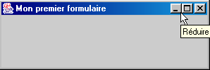
Eine grafische Benutzeroberfläche erweitert in der Regel die Basisklasse JFrame:
public class form1 extends JFrame {
Die Basisklasse JFrame definiert ein einfaches Fenster mit Schaltflächen zum Schließen, Maximieren und Minimieren, einer anpassbaren Größe usw. und verarbeitet Ereignisse für diese grafischen Objekte. Hier spezialisieren wir die Basisklasse, indem wir ihren Titel sowie ihre Breite (300 Pixel) und Höhe (100 Pixel) festlegen. Dies geschieht in ihrem Konstruktor:
// le constructeur
public form1() {
// titre de la fenêtre
this.setTitle("Mon premier formulaire");
// dimensions de la fenêtre
this.setSize(new Dimension(300,100));
}//constructeur
Der Fenstertitel wird durch die Methode setTitle festgelegt, die Abmessungen durch die Methode setSize. Diese Methode nimmt als Parameter ein Dimension-Objekt (Breite, Höhe) entgegen, wobei Breite und Höhe die in Pixeln ausgedrückte Breite und Höhe des Fensters sind.
Die Methode main startet die grafische Anwendung wie folgt:
new form1().setVisible(true);
Anschließend wird ein Formular vom Typ „form1“ erstellt (new form1()) und angezeigt (setVisible(true)), woraufhin die Anwendung auf Ereignisse im Formular (Klicks, Mausbewegungen usw.) wartet und diejenigen ausführt, die das Formular verarbeitet. In diesem Fall verarbeitet unser Formular keine anderen Ereignisse als diejenigen, die von der Basisklasse JFrame verarbeitet werden (Klicks auf Schließen-Schaltflächen, Maximieren/Minimieren, Ändern der Fenstergröße, Verschieben des Fensters usw.).
Wenn man dieses Programm testet, indem man es in einem DOS-Fenster mit folgendem Befehl ausführt:
um die Datei form1.class auszuführen, stellen wir fest, dass wir beim Schließen des angezeigten Fensters nicht die „Kontrolle“ über das DOS-Fenster zurückerhalten, als ob das Programm noch nicht beendet wäre. Dies ist tatsächlich der Fall. Das Programm läuft wie folgt ab:
- Zunächst wird ein erster Ausführungs-Thread gestartet, um die main-Methode auszuführen
- Wenn diese Methode das Formular erstellt und anzeigt, wird ein zweiter Thread erstellt, um speziell Ereignisse im Zusammenhang mit dem Formular
- Nach dieser Erstellung wird in unserem Beispiel der Thread der main-Methode beendet, sodass nur noch der GUI-Ausführungsthread übrig bleibt.
- Wenn das Fenster geschlossen wird, verschwindet es, unterbricht aber nicht den Thread, in dem es lief
- Vorerst sind wir gezwungen, diesen Thread zu stoppen, indem wir im DOS-Fenster, aus dem das Programm gestartet wurde, Strg-C drücken.
Überprüfen wir nun, ob zwei separate Threads vorhanden sind: einer, in dem die main-Methode ausgeführt wird, und ein anderer, in dem das GUI-Fenster ausgeführt wird:
// imported classes
import javax.swing.*;
import java.awt.*;
import java.io.*;
// the form class
public class form1 extends JFrame {
// the manufacturer
public form1() {
// window title
this.setTitle("Mon premier formulaire");
// window dimensions
this.setSize(new Dimension(300,100));
}//manufacturer
// test function
public static void main(String[] args) {
// follow-up
System.out.println("Début du thread main");
// the form is displayed
new form1().setVisible(true);
// follow-up
System.out.println("Fin du thread main");
}//hand
}//class
Die Ausführung liefert folgende Ergebnisse:

Wir sehen, dass der Hauptthread beendet wurde, während das Fenster noch angezeigt wird. Das Schließen des Fensters beendet nicht den Thread, in dem es ausgeführt wurde. Um diesen Thread zu stoppen, drücken Sie im DOS-Fenster erneut Strg-C.
Zum Abschluss dieses Beispiels beachten Sie bitte die importierten Pakete:
- javax.swing für die Klasse JFrame
- java.awt für die Klasse Dimension
5.1.2. Behandlung eines Ereignisses
Im vorherigen Beispiel müssten wir das Schließen des Fensters selbst behandeln, damit die Anwendung stoppt, wenn dies geschieht – was derzeit nicht der Fall ist. Dazu müssen wir ein Objekt erstellen, das auf Ereignisse im Fenster „lauscht“ und das Ereignis „Fenster schließen“ erkennt. Dieses Objekt wird als „Listener“ oder Ereignisbehandler bezeichnet. Es gibt verschiedene Arten von Listenern für die unterschiedlichen Ereignisse, die an den Komponenten einer grafischen Benutzeroberfläche auftreten können. Für die JFrame-Komponente heißt der Listener WindowListener und ist eine Schnittstelle, die die folgenden Methoden definiert (siehe Java-Dokumentation)
Methodenzusammenfassung | ||
void | windowActivated(WindowEvent e) Das Fenster wird zum aktiven Fenster | |
void | windowClosed(WindowEvent e) Das Fenster wurde geschlossen | |
void | windowClosing(WindowEvent e) Der Benutzer oder das Programm hat das Schließen des Fensters angefordert | |
void | windowDeactivated(WindowEvent e) Das Fenster ist nicht mehr das aktive Fenster | |
void | windowDeiconified(WindowEvent e) Das Fenster wechselt vom minimierten in den normalen Zustand | |
void | windowIconified(WindowEvent e) Das Fenster wechselt vom normalen Zustand in den minimierten Zustand | |
void | windowOpened(WindowEvent e) Das Fenster wird zum ersten Mal sichtbar | |
Es gibt also sieben Ereignisse, die abgehandelt werden können. Alle Handler erhalten ein WindowEvent-Objekt als Parameter, das wir vorerst ignorieren werden. Das hier relevante Ereignis ist das Schließen des Fensters, das von der windowClosing-Methode abgehandelt werden muss. Um dieses Ereignis zu behandeln, können wir wie folgt ein WindowListener-Objekt mithilfe einer anonymen Klasse erstellen:
// création d'un gestionnaire d'événements
WindowListener win=new WindowListener(){
public void windowActivated(WindowEvent e){}
public void windowClosed(WindowEvent e){}
public void windowClosing(WindowEvent e){System.exit(0);}
public void windowDeactivated(WindowEvent e){}
public void windowDeiconified(WindowEvent e){}
public void windowIconified(WindowEvent e){}
public void windowOpened(WindowEvent e){}
};//définition win
Unser Event-Handler, der die WindowListener-Schnittstelle implementiert, muss alle sieben Methoden dieser Schnittstelle definieren. Da wir nur das Schließen des Fensters behandeln wollen, definieren wir nur Code für die windowClosing-Methode. Wenn die anderen Ereignisse eintreten, werden wir benachrichtigt, führen aber keine Aktion aus. Was tun wir, wenn wir benachrichtigt werden, dass das Fenster geschlossen wird (windowClosing)? Wir beenden die Anwendung:
public void windowClosing(WindowEvent e){System.exit(0);}
Hier haben wir ein Objekt, das in der Lage ist, Fensterereignisse im Allgemeinen zu verarbeiten. Wie verknüpfen wir es mit einem bestimmten Fenster? Die Klasse JFrame verfügt über die Methode addWindowListener(WindowListener win), mit der wir einen „Fenster“-Ereignisbehandler mit einem bestimmten Fenster verknüpfen können. Hier, im Fensterkonstruktor, schreiben wir also:
// création d'un gestionnaire d'événements
WindowListener win=new WindowListener(){
public void windowActivated(WindowEvent e){}
public void windowClosed(WindowEvent e){}
public void windowClosing(WindowEvent e){System.exit(0);}
public void windowDeactivated(WindowEvent e){}
public void windowDeiconified(WindowEvent e){}
public void windowIconified(WindowEvent e){}
public void windowOpened(WindowEvent e){}
};//définition win
// ce gestionnaire d'événements va gérer les évts de la fenêtre courante
this.addWindowListener(win);
Das vollständige Programm lautet wie folgt:
// imported classes
import javax.swing.*;
import java.awt.*;
import java.io.*;
import java.awt.event.*;
// the form class
public class form2 extends JFrame {
// the manufacturer
public form2() {
// window title
this.setTitle("Mon premier formulaire");
// window dimensions
this.setSize(new Dimension(300,100));
// creation of an event manager
WindowListener win=new WindowListener(){
public void windowActivated(WindowEvent e){}
public void windowClosed(WindowEvent e){}
public void windowClosing(WindowEvent e){System.exit(0);}
public void windowDeactivated(WindowEvent e){}
public void windowDeiconified(WindowEvent e){}
public void windowIconified(WindowEvent e){}
public void windowOpened(WindowEvent e){}
};//definition win
// this event handler will manage the events of the current window
this.addWindowListener(win);
}//manufacturer
// test function
public static void main(String[] args) {
// the form is displayed
new form2().setVisible(true);
}//hand
}//class
Das Paket „java.awt.event“ enthält die Schnittstelle „WindowListener“. Wenn wir dieses Programm ausführen und das angezeigte Fenster schließen, sehen wir im DOS-Fenster, in dem das Programm gestartet wurde, dass das Programm die Ausführung beendet hat, was zuvor nicht der Fall war.
In unserem Programm ist die Erstellung des Objekts, das für die Behandlung von Fensterereignissen zuständig ist, etwas umständlich, da wir gezwungen sind, Methoden auch für Ereignisse zu definieren, die wir nicht behandeln wollen. In diesem Fall können wir anstelle der WindowListener-Schnittstelle die WindowAdapter-Klasse verwenden. Diese Klasse implementiert die WindowListener-Schnittstelle mit sieben leeren Methoden. Indem wir von der WindowAdapter-Klasse ableiten und nur die Methoden neu definieren, die uns interessieren, erzielen wir das gleiche Ergebnis wie mit der WindowListener-Schnittstelle, ohne jedoch die Methoden definieren zu müssen, die uns nicht interessieren. Die Sequenz
- , in der der Ereignis-Handler
- die Zuordnung des Handlers zum Fenster
kann in unserem Beispiel wie folgt durchgeführt werden:
// création d'un gestionnaire d'événements
WindowAdapter win=new WindowAdapter(){
public void windowClosing(WindowEvent e){System.exit(0);}
};//définition win
// ce gestionnaire d'événements va gérer les évts de la fenêtre courante
this.addWindowListener(win);
Hier verwenden wir eine anonyme Klasse, die die Klasse WindowAdapter erweitert und deren Methode windowClosing überschreibt. Das Programm sieht dann wie folgt aus:
// imported classes
import javax.swing.*;
import java.awt.*;
import java.io.*;
import java.awt.event.*;
// the form class
public class form2 extends JFrame {
// the manufacturer
public form2() {
// window title
this.setTitle("Mon premier formulaire");
// window dimensions
this.setSize(new Dimension(300,100));
// creation of an event manager
WindowAdapter win=new WindowAdapter(){
public void windowClosing(WindowEvent e){System.exit(0);}
};//definition win
// this event handler will manage the events of the current window
this.addWindowListener(win); }//manufacturer
// test function
public static void main(String[] args) {
// the form is displayed
new form2().setVisible(true);
}//hand
}//class
Es liefert dieselben Ergebnisse wie das vorherige Programm, ist aber einfacher zu schreiben.
5.1.3. Ein Formular mit einer Schaltfläche
Fügen wir nun eine Schaltfläche zu unserem Fenster hinzu:
// imported classes
import javax.swing.*;
import java.awt.*;
import java.io.*;
import java.awt.event.*;
// the form class
public class form3 extends JFrame {
// a button
JButton btnTest=null;
Container conteneur=null;
// the manufacturer
public form3() {
// window title
this.setTitle("Formulaire avec bouton");
// window dimensions
this.setSize(new Dimension(300,100));
// creation of an event manager
WindowAdapter win=new WindowAdapter(){
public void windowClosing(WindowEvent e){System.exit(0);}
};//definition win
// this event handler will manage the events of the current window
this.addWindowListener(win);
// retrieve the window container
conteneur=this.getContentPane();
// select a layout manager for components in this container
conteneur.setLayout(new FlowLayout());
// create a button
btnTest=new JButton();
// we set the wording
btnTest.setText("Test");
// add the button to the container
conteneur.add(btnTest);
}//manufacturer
// test function
public static void main(String[] args) {
// the form is displayed
new form3().setVisible(true);
}//hand
}//class
Ein JFrame-Fenster verfügt über einen Container, in den grafische Komponenten (Schaltflächen, Kontrollkästchen, Dropdown-Listen usw.) platziert werden können. Auf diesen Container kann über die Methode getContentPane der JFrame-Klasse zugegriffen werden:
Container conteneur=null;
..........
// on récupère le conteneur de la fenêtre
conteneur=this.getContentPane();
Jede Komponente wird mithilfe der add-Methode der Container-Klasse in den Container eingefügt. Um also die Komponente C in das oben genannte Container-Objekt einzufügen, schreiben wir:
Wo wird diese Komponente im Container platziert? Es gibt verschiedene Layout-Manager für Komponenten mit dem Namen XXXLayout, wobei XXX für Border, Flow usw. stehen kann. Jeder Layout-Manager hat seine eigenen Eigenschaften. Der FlowLayout-Manager ordnet Komponenten beispielsweise in einer Reihe an, beginnend am oberen Rand des Formulars. Wenn eine Reihe voll ist, werden die Komponenten in der nächsten Reihe platziert. Um einen Layout-Manager einem JFrame-Fenster zuzuweisen, verwenden Sie die Methode setLayout der Klasse JFrame in folgender Form:
In unserem Beispiel haben wir also Folgendes geschrieben, um einen FlowLayout-Manager mit dem Fenster zu verknüpfen:
// on choisit un gestionnaire de mise en forme des composants dans ce conteneur
conteneur.setLayout(new FlowLayout());
Sie können sich dafür entscheiden, keinen Layout-Manager zu verwenden, und schreiben:
In diesem Fall müssen wir die genauen Koordinaten der Komponente innerhalb des Containers in der Form (x, y, Breite, Höhe) angeben, wobei (x, y) die Koordinaten der oberen linken Ecke der Komponente innerhalb des Containers sind. Dies ist die Methode, die wir im weiteren Verlauf am häufigsten verwenden werden.
Wir wissen nun, wie Komponenten zum Container hinzugefügt (add) und wo sie platziert werden (setLayout). Es bleibt nur noch, die
Komponenten zu identifizieren, die in einem Container platziert werden können. Hier platzieren wir eine Schaltfläche, die auf der Klasse javax.swing.JButton basiert:
JButton btnTest=null;
..........
// on crée un bouton
btnTest=new JButton();
// on fixe son libellé
btnTest.setText("Test");
// on ajoute le bouton au conteneur
conteneur.add(btnTest);
Wenn Sie dieses Programm ausführen, erscheint das folgende Fenster:

Wenn Sie die Größe des obigen Formulars ändern, wird automatisch der Layout-Manager des Containers aufgerufen, um die Komponenten neu zu positionieren:

Dies ist der Hauptvorteil von Layout-Managern: Sie sorgen für ein konsistentes Layout der Komponenten, wenn sich die Größe des Containers ändert. Verwenden wir den Null-Layout-Manager, um den Unterschied zu sehen. Die Schaltfläche wird nun anhand der folgenden Anweisungen im Container platziert:
// on choisit un gestionnaire de mise en forme des composants dans ce conteneur
conteneur.setLayout(null);
// on crée un bouton
btnTest=new JButton();
// on fixe son libellé
btnTest.setText("Test");
// on fixe son emplacement et ses dimensions
btnTest.setBounds(10,20,100,20);
// on ajoute le bouton au conteneur
conteneur.add(btnTest);
Hier platzieren wir die Schaltfläche explizit am Punkt (10,20) im Formular und legen ihre Abmessungen auf 100 Pixel Breite und 20 Pixel Höhe fest. Das neue Fenster sieht wie folgt aus:

Wenn wir die Größe des Fensters ändern, bleibt die Schaltfläche an derselben Stelle.

Wenn wir auf die Schaltfläche „Test“ klicken, passiert nichts. Das liegt daran, dass wir der Schaltfläche noch keinen Ereignisbehandler zugewiesen haben. Um herauszufinden, welche Arten von Ereignisbehandlern für eine bestimmte Komponente verfügbar sind, können wir in ihrer Klassendefinition nach addXXXListener-Methoden suchen, mit denen wir der Komponente einen Ereignisbehandler zuweisen können. Die Klasse javax.swing.JButton erweitert die Klasse javax.swing.AbstractButton, die die folgenden Methoden enthält:
Methodenzusammenfassung | ||
void | addActionListener(ActionListener l) | |
void | addChangeListener(ChangeListener l) | |
void | addItemListener(ItemListener l) | |
Hier müssen Sie in der Dokumentation nachschlagen, welcher Event-Handler den Klick auf die Schaltfläche verarbeitet. Es handelt sich um die ActionListener-Schnittstelle. Diese Schnittstelle definiert nur eine Methode:
Methodenzusammenfassung | ||
void | actionPerformed(ActionEvent e) | |
Die Methode erhält einen ActionEvent-Parameter, den wir vorerst ignorieren. Um den Klick auf die Schaltfläche „btntest“ in unserem Programm zu verarbeiten, verknüpfen wir zunächst einen Ereignis-Listener damit:
btnTest.addActionListener(new ActionListener()
{
public void actionPerformed(ActionEvent evt){
btnTest_clic(evt);
}
}//anonymous class
);//evt manager
Hier ruft die Methode actionPerformed die Methode btnTest_clic auf, die wir wie folgt definieren:
public void btnTest_clic(ActionEvent evt){
// console monitoring
System.out.println("clic sur bouton");
}//btnTest_click
Jedes Mal, wenn der Benutzer auf die Schaltfläche „Test“ klickt, wird eine Meldung in die Konsole geschrieben. Dies wird in der folgenden Ausführung gezeigt:
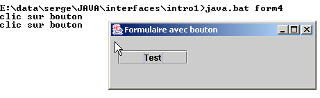
Das vollständige Programm lautet wie folgt:
// imported classes
import javax.swing.*;
import java.awt.*;
import java.io.*;
import java.awt.event.*;
// the form class
public class form4 extends JFrame {
// a button
JButton btnTest=null;
Container conteneur=null;
// the manufacturer
public form4() {
// window title
this.setTitle("Formulaire avec bouton");
// window dimensions
this.setSize(new Dimension(300,100));
// creation of an event manager
WindowAdapter win=new WindowAdapter(){
public void windowClosing(WindowEvent e){System.exit(0);}
};//definition win
// this event handler will manage the events of the current window
this.addWindowListener(win);
// retrieve the window container
conteneur=this.getContentPane();
// select a layout manager for components in this container
conteneur.setLayout(null);
// create a button
btnTest=new JButton();
// we set the wording
btnTest.setText("Test");
// determine its location and dimensions
btnTest.setBounds(10,20,100,20);
// we associate it with an event manager
btnTest.addActionListener(new ActionListener()
{
public void actionPerformed(ActionEvent evt){
btnTest_clic(evt);
}
}//anonymous class
);//evt manager
// add the button to the container
conteneur.add(btnTest);
}//manufacturer
public void btnTest_clic(ActionEvent evt){
// console monitoring
System.out.println("clic sur bouton");
}//btnTest_click
// test function
public static void main(String[] args) {
// the form is displayed
new form4().setVisible(true);
}//hand
}//class
5.1.4. Ereignisbehandler
Die wichtigsten Swing-Komponenten, die wir behandeln werden, sind Fenster (JFrame), Schaltflächen (JButton), Kontrollkästchen (JCheckBox), Optionsfelder (JButtonRadio), Dropdown-Listen (JComboBox), Listen (JList), Bildlaufleisten (JScrollBar), Beschriftungen (JLabel), einzeilige Textfelder (JTextField) oder mehrzeilige Textfelder (JTextArea), Menüs (JMenuBar) und Menüelemente (JMenuItem).
In den folgenden Tabellen sind einige Ereignisbehandler und die ihnen zugeordneten Ereignisse aufgeführt.
Handler | Komponente(n) | Registrierungsmethode | Ereignis |
ActionListener | JButton, JCheckbox, JButtonRadio, JMenuItem | public void addActionListener(ActionListener) | Klicken Sie auf die Schaltfläche, das Kontrollkästchen, das Optionsfeld oder das Menüelement |
JTextField | |||
ItemListener | JComboBox, JList | public void addItemListener(ItemListener) | Das ausgewählte Element hat sich geändert |
InputMethodListener | JTextField, JTextArea | public void addMethodInputListener(InputMethodListener) | Der Text im Eingabefeld hat sich geändert oder der Eingabecursor hat sich bewegt |
CaretListener | JTextField, JTextArea | public void addCaretListener(CaretListener) | Die Position des Eingabecursors hat sich geändert |
AdjustmentListener | JScrollBar | public void addAdjustmentListener(AdjustmentListener) | Der Wert des Schiebereglers hat sich geändert |
MouseMotionListener | public void addMouseMotionListener(MouseMotionListener) | Die Maus hat sich bewegt | |
WindowListener | JFrame | public void addWindowListener(WindowListener) | Fensterereignis |
MouseListener | public void addMouselistener(MouseListener) | Mausereignisse (Klick, Betreten/Verlassen des Bereichs einer Komponente, Tastenbetätigung, Loslassen) | |
Fokus-Listener | public void addFocusListener(FocusListener) | Fokusereignisse (erhalten, verloren) | |
KeyListener | public void addKeyListener(KeyListener) | Tastaturereignis (Taste getippt, gedrückt, losgelassen) |
Komponente | Methode zum Registrieren von Ereignisbehandlungsroutinen |
JButton | public void addActionListener(ActionListener) |
JCheckbox | public void addItemListener(ItemListener) |
JCheckboxMenuItem | public void addItemListener(ItemListener) |
JComboBox | public void addItemListener(ItemListener) public void addActionListener(ActionListener) |
Container | public void addContainerListener(ContainerListener) |
JComponent | public void addComponentListener(ComponentListener) public void addFocusListener(FocusListener) public void addKeyListener(KeyListener) public void addMouseListener(MouseListener) public void addMouseMotionListener(MouseMotionListener) |
JFrame | public void addWindowListener(WindowListener) |
JList | public void addItemListener(ItemListener) |
JMenuItem | public void addActionListener(ActionListener) |
JPanel | als Container |
JScrollPane | als Container |
JScrollBar | public void addAdjustmentListener(AdjustmentListener) |
JTextComponent | public void addInputMethodListener(InputMethodListener) public void addCaretListener(CaretListener) |
JTextArea | wie JTextComponent |
JTextField | wie JTextComponent public void addActionListener(ActionListener) |
Alle Komponenten, mit Ausnahme derjenigen vom Typ TextXXX, leiten sich von der Klasse JComponent ab und verfügen daher auch über die dieser Klasse zugeordneten Methoden.
5.1.5. Ereignisbehandlungsmethoden
Die folgende Tabelle listet die Methoden auf, die die verschiedenen Ereignisbehandler implementieren müssen.
Schnittstelle | Methoden |
ActionListener | public void actionPerformed(ActionEvent) |
AdjustmentListener | public void adjustmentValueChanged(AdjustmentEvent) |
Komponenten-Listener | public void componentHidden(ComponentEvent) public void componentMoved(ComponentEvent) public void componentResized(ComponentEvent) public void componentShown(ComponentEvent) |
ContainerListener | public void componentAdded(ContainerEvent) public void componentRemoved(ContainerEvent) |
Fokus-Listener | public void focusGained(FocusEvent) public void focusLost(FocusEvent) |
Element-Listener | public void itemStateChanged(ItemEvent) |
KeyListener | public void keyPressed(KeyEvent) public void keyReleased(KeyEvent) public void keyTyped(KeyEvent) |
Maus-Listener | public void mouseClicked(MouseEvent) public void MausBetreten(MausEreignis) public void Mausverlassen(Mausereignis) public void Maus gedrückt(Mausereignis) public void mouseReleased(MouseEvent) |
MouseMotionListener | public void mouseDragged(MouseEvent) public void MausBewegt(MouseEvent) |
TextListener | public void textValueChanged(TextEvent) |
InputMethodListener | public void InputMethodTextChanged(InputMethodEvent) public void caretPositionChanged(InputMethodEvent) |
CaretListener | public void caretUpdate(CaretEvent) |
Fenster-Listener | public void windowActivated(WindowEvent) public void FensterGeschlossen(FensterEreignis) public void windowClosing(WindowEvent) public void windowDeactivated(WindowEvent) public void windowDeiconified(WindowEvent) public void windowIconified(WindowEvent) public void windowOpened(WindowEvent) |
5.1.6. Adapterklassen
Wie wir bei der WindowListener-Schnittstelle gesehen haben, gibt es Klassen mit dem Namen XXXAdapter, die die XXXListener-Schnittstellen mit leeren Methoden implementieren. Ein von einer XXXAdapter-Klasse abgeleiteter Ereignisbehandler kann dann nur eine Teilmenge der Methoden der XXXListener-Schnittstelle implementieren – insbesondere diejenigen, die von der Anwendung benötigt werden.
Angenommen, wir möchten Mausklicks auf einer Frame-Komponente f1 verarbeiten. Wir könnten ihr einen Ereignisbehandler zuweisen, indem wir Folgendes verwenden:
und schreiben:
public class gestionnaireSouris implements MouseListener{
// we write the 5 methods of the MouseListener interface
// mouseClicked, ..., mouseReleased)
}// end of class
Da wir nur Mausklicks verarbeiten wollen, ist es besser, Folgendes zu schreiben:
public class gestionnaireSouris extends MouseAdapter{
// we write a single method that handles mouse clicks
public void mouseClicked(MouseEvent evt){
…
}
}// end of class
Die folgende Tabelle listet die Adapterklassen für die verschiedenen Ereignisbehandler auf:
Ereignisbehandler | Adapter |
ComponentListener | ComponentAdapter |
Container-Listener | Container-Adapter |
Fokus-Listener | Fokus-Adapter |
Tasten-Listener | Tastenadapter |
Maus-Listener | Maus-Adapter |
Mausbewegungs-Listener | Mausbewegungsadapter |
Fenster-Listener | FensterAdapter |
5.1.7. Fazit
Wir haben soeben die grundlegenden Konzepte zur Erstellung grafischer Benutzeroberflächen in Java vorgestellt:
- Erstellen eines Fensters
- Erstellen von Komponenten
- Zuordnung von Komponenten zum Fenster mithilfe eines Layout-Managers
- Zuweisen von Ereignisbehandlungsroutinen zu Komponenten
Anstatt grafische Benutzeroberflächen nun wie zuvor „von Hand“ zu erstellen, werden wir JBuilder verwenden, ein Java-Entwicklungstool von Borland/Inprise, Version 4 und höher. Wir werden Komponenten aus der java.swing-Bibliothek verwenden, die derzeit von Sun, dem Entwickler von Java, empfohlen wird.
5.2. Erstellen einer grafischen Benutzeroberfläche mit JBuilder
5.2.1. Unser erstes JBuilder-Projekt
Um uns mit JBuilder vertraut zu machen, erstellen wir eine sehr einfache Anwendung: ein leeres Fenster.
- Starten Sie JBuilder und wählen Sie „Datei/Neues Projekt“. Daraufhin erscheint die erste Seite eines Assistenten:

- Füllen Sie die folgenden Felder aus:
Projektname | start Dadurch wird eine Projektdatei mit dem Namen „start.jpr“ in dem Ordner erstellt, der im Feld „Projektverzeichnisname“ angegeben ist |
Stammverzeichnis | Geben Sie den Ordner an, in dem sich der zu erstellende Projektordner befinden soll. |
Projektverzeichnisname | Geben Sie den Namen des Ordners an, in dem alle Projektdateien abgelegt werden sollen. Dieser Ordner wird in dem Verzeichnis erstellt, das im Feld „Stammverzeichnis“ angegeben ist |
Quelldateien (.java, .html, ...), Zieldateien (.class, ...) und Sicherungsdateien können in verschiedenen Verzeichnissen abgelegt werden. Wenn Sie die entsprechenden Felder leer lassen, werden sie im selben Verzeichnis wie das Projekt abgelegt.
Klicken Sie auf [Weiter]
- Ein Bildschirm bestätigt die im vorherigen Schritt getroffenen Auswahlen

Klicken Sie auf [Weiter]
- Auf einem neuen Bildschirm werden Sie gebeten, Ihr Projekt zu beschreiben:

Klicken Sie auf [Fertigstellen]
- Vergewissern Sie sich, dass die Option „Ansicht/Projekt“ aktiviert ist. Im linken Bereich sollte nun Ihre Projektstruktur angezeigt werden.

- Erstellen wir nun eine grafische Benutzeroberfläche in diesem Projekt. Wählen Sie die Option „Datei/Neu/Anwendung“:

Geben Sie im Feld „Klasse“ den Namen der zu erstellenden Klasse ein. Hier haben wir denselben Namen wie für das Projekt verwendet.
Klicken Sie auf [Weiter]
- Der folgende Bildschirm wird angezeigt:

Klasse | interfaceStart Dies ist der Name der Klasse, die dem zu erstellenden Fenster entspricht |
Titel | Dies ist der Text, der in der Titelleiste des Fensters angezeigt wird |
Beachten Sie, dass wir oben festgelegt haben, dass das Fenster beim Start der Anwendung auf dem Bildschirm zentriert werden soll.
Klicken Sie auf [Fertigstellen]
- Hier kommt JBuilder ins Spiel.
- Es generiert die .java-Quelldateien für die beiden Klassen, die wir benannt haben: die Anwendungsklasse und die GUI-Klasse. Diese beiden Dateien erscheinen in der Projektstruktur im linken Fenster

- Um auf den generierten Code für die beiden Klassen zuzugreifen, doppelklicken Sie einfach auf die entsprechende .java-Datei. Wir werden später auf den generierten Code zurückkommen.
- Stellen Sie sicher, dass die Option „Ansicht/Struktur“ aktiviert ist. So können Sie die Struktur der aktuell ausgewählten Klasse anzeigen (doppelklicken Sie auf die .java-Datei). Hier sehen Sie zum Beispiel die Struktur der Klasse „début“:

Hier erfahren wir mehr über:
-
die importierten Bibliotheken (Importe)
-
dass es einen Konstruktor start() gibt
-
dass es eine statische Methode main() gibt
-
dass es ein Attribut packFrame gibt
Was ist der Vorteil, Zugriff auf die Struktur einer Klasse zu haben?
-
Man erhält einen Überblick darüber. Dies ist nützlich, wenn Ihre Klasse komplex ist.
-
Sie können auf den Code einer Methode zugreifen, indem Sie im Klassenstrukturfenster darauf klicken. Auch dies ist nützlich, wenn Ihre Klasse Hunderte von Zeilen umfasst. Sie müssen nicht jede Zeile durchblättern, um den gesuchten Code zu finden.
Der von JBuilder generierte Code ist bereits einsatzbereit. Klicken Sie auf „Ausführen/Projekt ausführen“ oder drücken Sie F9, und Sie sehen das gewünschte Fenster:

Außerdem wird es ordnungsgemäß geschlossen, wenn Sie auf die Schaltfläche „Schließen“ des Fensters klicken. Wir haben soeben unsere erste grafische Benutzeroberfläche erstellt. Wir können unser Projekt über die Option „Datei/Projekte schließen“ speichern:

Wenn Sie auf „Alle“ klicken, werden alle Projekte im obigen Fenster ausgewählt. Durch Klicken auf „OK“ werden sie geschlossen. Wenn wir neugierig genug sind, um mit dem Windows Explorer zu unserem Projektordner zu navigieren (dem Ordner, der dem Assistenten zu Beginn der Projekteinrichtung angegeben wurde), finden wir dort die folgenden Dateien:

In unserem Beispiel haben wir festgelegt, dass sich alle Dateien (.java-Quelldateien, .class-Ausgabedateien, .jpr-Sicherungsdateien) im selben Ordner wie das .jpr-Projekt befinden sollen.
5.2.2. Von JBuilder für eine grafische Benutzeroberfläche generierte Dateien
Werfen wir nun einen Blick auf die von JBuilder generierten .java-Quelldateien. Es ist wichtig zu wissen, wie man das Generierte liest, da wir meistens Code zu dem bereits Vorhandenen hinzufügen müssen. Öffnen wir zunächst unser Projekt: „Datei/Projekt öffnen“ und wählen wir das Projekt „debut.jpr“ aus. Wir sehen das Projekt, das wir zuvor erstellt haben.
5.2.2.1. Die Hauptklasse
Sehen wir uns die Klasse „début.java“ an, indem wir im Fenster mit der Liste der Projektdateien auf ihren Namen doppelklicken. Wir haben folgenden Code:
import javax.swing.UIManager;
import java.awt.*;
public class début {
boolean packFrame = false;
/**Building the application*/
public début() {
interfaceDébut frame = new interfaceDébut();
//Validate frames with predefined sizes
//Compact frames with preferred size information - e.g. from their layout
if (packFrame) {
frame.pack();
}
else {
frame.validate();
}
//Center window
Dimension screenSize = Toolkit.getDefaultToolkit().getScreenSize();
Dimension frameSize = frame.getSize();
if (frameSize.height > screenSize.height) {
frameSize.height = screenSize.height;
}
if (frameSize.width > screenSize.width) {
frameSize.width = screenSize.width;
}
frame.setLocation((screenSize.width - frameSize.width) / 2, (screenSize.height - frameSize.height) / 2);
frame.setVisible(true);
}
/**Main method*/
public static void main(String[] args) {
try {
UIManager.setLookAndFeel(UIManager.getSystemLookAndFeelClassName());
}
catch(Exception e) {
e.printStackTrace();
}
new début();
}
}
Lassen Sie uns den generierten Code kommentieren:
- Die Hauptfunktion legt das Erscheinungsbild des Fensters fest (setLookAndFeel) und erstellt eine Instanz der Klasse „début“.
- Anschließend wird der Konstruktor début() ausgeführt. Er erstellt eine Frame-Instanz der Klasse window (new interfaceDébut()). Diese Instanz wird erstellt, aber nicht angezeigt.
- Das Fenster wird dann anhand der für jede seiner Komponenten verfügbaren Informationen in der Größe angepasst (frame.validate). Anschließend beginnt es sein eigenständiges Dasein, indem es sich anzeigt und auf Benutzereingaben reagiert.
- Das Fenster wird auf dem Bildschirm zentriert, da wir dies bei der Konfiguration des Fensters mit dem Assistenten angefordert haben.
Schauen wir uns an, was passieren würde, wenn wir den Code in „début.java“ auf das absolute Minimum reduzieren würden, wie wir es zu Beginn des Kapitels getan haben. Erstellen wir eine neue Klasse. Wählen Sie „Datei/Neue Klasse“:

Benennen Sie die neue Klasse „start2“ und klicken Sie auf [Fertigstellen]. Eine neue Datei erscheint im Projekt:

Die Datei „début2.java“ ist auf ihre einfachste Form reduziert:
Vervollständigen wir die Klasse wie folgt:
public class début2 {
// main function
public static void main(String args[]){
// creates the
new interfaceDébut().show(); // or new interfaceDébut.setVisible(true);
}//hand
}//class start2
Die Hauptfunktion erstellt eine Instanz des Fensters interfaceDébut und zeigt es an (show). Bevor wir unser Projekt ausführen, müssen wir festlegen, dass die Klasse, die die auszuführende Hauptfunktion enthält, nun die Klasse début2 ist. Klicken Sie mit der rechten Maustaste auf das Projekt début.jpr und wählen Sie die Option „Eigenschaften“, dann die Registerkarte „Ausführung“:
21

Hier ist angegeben, dass die Hauptklasse „début“ ist (1). Klicken Sie auf die Schaltfläche (2), um eine andere Hauptklasse auszuwählen:

Wählen Sie „début2“ aus und klicken Sie auf [OK].

Klicken Sie auf [OK], um diese Auswahl zu bestätigen, und führen Sie das Projekt anschließend aus, indem Sie „Ausführen/Projekt ausführen“ wählen oder die Taste F9 drücken. Es erscheint dasselbe Fenster wie bei der Klasse „start“, nur dass es nicht zentriert ist, da dies hier nicht angefordert wurde. Von nun an werden wir die von JBuilder generierte Hauptklasse nicht mehr vorstellen, da sie immer dasselbe tut: ein Fenster erstellen. Von nun an konzentrieren wir uns auf die Fensterklasse.
5.2.2.2. Die Fensterklasse
Sehen wir uns nun den Code an, der für die Klasse interfaceDébut generiert wurde:
import java.awt.*;
import java.awt.event.*;
import javax.swing.*;
public class interfaceDébut extends JFrame {
JPanel contentPane;
BorderLayout borderLayout1 = new BorderLayout();
/**Building the frame*/
public interfaceDébut() {
enableEvents(AWTEvent.WINDOW_EVENT_MASK);
try {
jbInit();
}
catch(Exception e) {
e.printStackTrace();
}
}
/**Initialize component*/
private void jbInit() throws Exception {
contentPane = (JPanel) this.getContentPane();
contentPane.setLayout(borderLayout1);
this.setSize(new Dimension(400, 300));
this.setTitle("Ma première interface graphique avec Jbuilder");
}
/**Replaced, so we can get out when the window is closed*/
protected void processWindowEvent(WindowEvent e) {
super.processWindowEvent(e);
if (e.getID() == WindowEvent.WINDOW_CLOSING) {
System.exit(0);
}
}
}
5.2.2.2.1. Importierte Bibliotheken
Dies sind die Bibliotheken java.awt, java.awt.event und javax.swing. Die ersten beiden waren in den frühen Versionen von Java die einzigen, die für die Erstellung grafischer Benutzeroberflächen zur Verfügung standen. Die Bibliothek javax.swing ist neuer. Hier wird sie für das in diesem Beispiel verwendete JFrame-Fenster benötigt.
5.2.2.2.2. Die Attribute
JPanel ist ein Containertyp, in dem Komponenten platziert werden können. BorderLayout ist einer der verfügbaren Layout-Manager zum Platzieren von Komponenten innerhalb des Containers. In allen unseren Beispielen werden wir keinen Layout-Manager verwenden und die Komponenten selbst an einer bestimmten Stelle innerhalb des Containers platzieren. Dazu verwenden wir den Null-Layout-Manager.
5.2.2.2.3. Der Fensterkonstruktor
/**Building the frame*/
public interfaceDébut() {
enableEvents(AWTEvent.WINDOW_EVENT_MASK);
try {
jbInit();
}
catch(Exception e) {
e.printStackTrace();
}
}
/**Initialize component*/
private void jbInit() throws Exception {
contentPane = (JPanel) this.getContentPane();
contentPane.setLayout(borderLayout1);
this.setSize(new Dimension(400, 300));
this.setTitle("Ma première interface graphique avec Jbuilder");
}
- Der Konstruktor beginnt mit der Angabe, dass er Ereignisse im Fenster verarbeiten wird (enableEvents), und ruft anschließend die Methode jbInit auf.
- Der Container (JPanel) des Fensters (JFrame) wird abgerufen (getContentPane)
- Der Layout-Manager wird festgelegt (setLayout)
- Die Fenstergröße wird festgelegt (setSize)
- Der Fenstertitel wird festgelegt (setTitle)
5.2.2.2.4. Der Ereignis-Handler
/**Replaced, so we can get out when the window is closed*/
protected void processWindowEvent(WindowEvent e) {
super.processWindowEvent(e);
if (e.getID() == WindowEvent.WINDOW_CLOSING) {
System.exit(0);
}
Der Konstruktor hatte angedeutet, dass die Klasse Fensterereignisse verarbeiten würde. Die Methode processWindowEvent übernimmt diese Aufgabe. Sie beginnt damit, das empfangene WindowEvent an ihre übergeordnete Klasse (JFrame) weiterzuleiten; wenn es sich dann um das Ereignis WINDOW_CLOSING handelt – ausgelöst durch das Klicken auf die Schaltfläche zum Schließen des Fensters –, wird die Anwendung beendet.
5.2.2.2.5. Fazit
Der Code für die Fensterklasse unterscheidet sich von dem im Beispiel am Anfang des Kapitels vorgestellten. Würden wir einen anderen Java-Codegenerator als JBuilder verwenden, hätten wir wahrscheinlich noch anderen Code. In der Praxis akzeptieren wir den von JBuilder generierten Code zum Erstellen des Fensters, damit wir uns ausschließlich auf das Schreiben der Ereignisbehandler für die grafische Benutzeroberfläche konzentrieren können.
5.2.3. Zeichnen einer GUI
5.2.3.1. Ein Beispiel
Im vorherigen Beispiel haben wir keine Komponenten im Fenster platziert. Erstellen wir nun ein Fenster mit einer Schaltfläche, einer Beschriftung und einem Eingabefeld:

Die Felder lauten wie folgt:
Nr. | name | Typ | Rolle |
1 | lblInput | JLabel | eine Beschriftung |
2 | txtInput | JTextField | ein Eingabefeld |
3 | cmdDisplay | JButton | um den Inhalt des Textfelds „txtSaisie“ in einem Dialogfeld anzuzeigen |
Gehen Sie genauso vor wie im vorherigen Projekt und erstellen Sie das Projekt interface2.jpr, ohne vorerst Komponenten zum Fenster hinzuzufügen.

Wählen Sie im obigen Fenster die Klasse „interface2.java“ aus. Rechts neben diesem Fenster befindet sich ein Ordner mit Registerkarten:
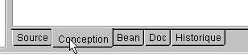
Die Registerkarte „Source“ bietet Zugriff auf den Quellcode der Klasse „interface2.java“. Über die Registerkarte „Design“ können Sie das Fenster visuell erstellen. Wählen Sie diese Registerkarte aus. Sie sehen nun den Fenstercontainer, der die Komponenten aufnehmen wird, die Sie darin platzieren. Er ist derzeit leer. Das linke Fenster zeigt die Klassenstruktur:
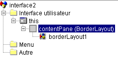
dies | steht für das Fenster |
contentPane | seinem Container, in den wir Komponenten platzieren werden, sowie den Layout-Modus für diese Komponenten innerhalb des Containers (standardmäßig BorderLayout) |
borderLayout1 | eine Instanz des Layout-Managers |
Wählen Sie dieses Objekt aus. Das Eigenschaftenfenster wird dann auf der rechten Seite angezeigt:

Einige dieser Eigenschaften sind besonders erwähnenswert:
Hintergrund | zum Festlegen der Hintergrundfarbe des Fensters |
foreground | zum Festlegen der Farbe des Texts und der Schaltflächen im Fenster |
JMenuBar | um dem Fenster ein Menü zuzuordnen |
title | um dem Fenster einen Titel zu geben |
resizable | um den Fenstertyp festzulegen |
Schriftart | um die Schriftart für den Text im Fenster festzulegen |
Solange dieses Objekt noch ausgewählt ist, können Sie die Größe des auf dem Bildschirm angezeigten Containers ändern, indem Sie die Ankerpunkte um den Container herum ziehen:

Wir sind nun bereit, Komponenten in den obigen Container zu ziehen. Bevor wir dies tun, ändern wir den Layout-Manager. Wählen Sie das contentPane-Objekt im Strukturfenster aus:

Wählen Sie dann im Eigenschaftenfenster dieses Objekts die Eigenschaft „layout“ aus und wählen Sie aus den verfügbaren Optionen den Wert „null“ aus:

Da kein Layout-Manager vorhanden ist, können wir die Komponenten frei innerhalb des Containers platzieren. Nun ist es an der Zeit, sie auszuwählen.
Wenn der Entwurfsbereich ausgewählt ist, stehen die Komponenten in einem Ordner mit Registerkarten am oberen Rand des Entwurfsfensters zur Verfügung:

Zum Erstellen der grafischen Benutzeroberfläche stehen uns Swing-Komponenten (1) und AWT-Komponenten (2) zur Verfügung. Hier verwenden wir die Swing-Komponenten. Wählen Sie in der Komponentenleiste oben eine JLabel-Komponente (3), eine JTextField-Komponente (4) und eine JButton-Komponente (5) aus und platzieren Sie diese im Container des Design-Fensters.

Nun passen wir jede dieser drei Komponenten an:
- das Label (JLabel) jLabel1
Wählen Sie die Komponente aus, um das Eigenschaftenfenster zu öffnen. Ändern Sie im Eigenschaftenfenster die folgenden Eigenschaften: Name: lblSaisie, Text: Saisie
- das Textfeld (JTextField) jTextfield1
Wählen Sie die Komponente aus, um ihr Eigenschaftenfenster zu öffnen. Ändern Sie im Fenster die folgenden Eigenschaften: Name: txtSaisie, Text: leer lassen
- die Schaltfläche (JButton): Name: cmdAfficher, Text: Anzeigen
Wir haben nun das folgende Fenster:

und die folgende Struktur:

Wir können unser Projekt ausführen (F9), um einen ersten Eindruck vom Fenster in Aktion zu bekommen:

Schließen Sie das Fenster. Wir müssen noch die Prozedur schreiben, die mit einem Klick auf die Schaltfläche „Show“ verbunden ist. Wählen Sie die Schaltfläche aus, um das Eigenschaftenfenster aufzurufen. Dieses Fenster enthält zwei Registerkarten: „Eigenschaften“ und „Ereignisse“. Wählen Sie „Ereignisse“ aus.

In der linken Spalte des Fensters sind die möglichen Ereignisse für die Schaltfläche aufgelistet. Ein Klick auf eine Schaltfläche entspricht dem Ereignis „actionPerformed“. Die rechte Spalte enthält den Namen der Prozedur, die aufgerufen wird, wenn das entsprechende Ereignis eintritt. Klicken Sie auf die Zelle rechts neben dem Ereignis „actionPerformed“:

JBuilder generiert für jeden Ereignis-Handler einen Standardnamen im Format ComponentName_EventName, in diesem Fall cmdDisplay_actionPerformed. Sie können den Standardnamen löschen und einen anderen eingeben. Um auf den Code für den Handler cmdDisplay_actionPerformed zuzugreifen, doppelklicken Sie einfach oben auf dessen Namen. Sie gelangen dann automatisch zum Quelltextfenster der Klasse, wo die Position auf dem Skelett des Codes des Ereignis-Handlers markiert ist:
Jetzt müssen Sie nur noch diesen Code vervollständigen. Hier möchten wir ein Dialogfeld anzeigen, das den Inhalt des Feldes txtSaisie enthält:
void cmdAfficher_actionPerformed(ActionEvent e) {
JOptionPane.showMessageDialog(this, "texte saisi="+txtSaisie.getText(),
"Vérification de la saisie",JOptionPane.INFORMATION_MESSAGE);
}
JOptionPane ist eine Klasse aus der javax.swing-Bibliothek. Sie ermöglicht es, Meldungen zusammen mit einem Symbol anzuzeigen oder Informationen vom Benutzer abzufragen. Hier verwenden wir eine statische Methode der Klasse:

parentComponent | das „übergeordnete“ Container-Objekt des Dialogfelds: hier this. |
message | ein anzuzeigendes Objekt. Hier der Inhalt des Eingabefelds |
title | der Titel des Dialogfelds |
messageType | der Typ der anzuzeigenden Meldung. Bestimmt das Symbol, das im Feld neben der Meldung angezeigt wird. Mögliche Werte: INFORMATION_MESSAGE, QUESTION_MESSAGE, ERROR_MESSAGE, WARNING_MESSAGE, PLAIN_MESSAGE |
Starten wir unsere Anwendung (F9):


5.2.3.2. Der Code der Fensterklasse
import java.awt.*;
import java.awt.event.*;
import javax.swing.*;
import java.beans.*;
import javax.swing.event.*;
public class interface2 extends JFrame {
JPanel contentPane;
JLabel lblSaisie = new JLabel();
JTextField txtSaisie = new JTextField();
JButton cmdAfficher = new JButton();
/**Building the frame*/
public interface2() {
enableEvents(AWTEvent.WINDOW_EVENT_MASK);
try {
jbInit();
}
catch(Exception e) {
e.printStackTrace();
}
}
/**Initialize component*/
private void jbInit() throws Exception {
lblSaisie.setText("Saisie");
lblSaisie.setBounds(new Rectangle(25, 23, 71, 21));
contentPane = (JPanel) this.getContentPane();
contentPane.setLayout(null);
this.setSize(new Dimension(304, 129));
this.setTitle("Saisies & boutons - 1");
txtSaisie.setBounds(new Rectangle(120, 21, 138, 24));
cmdAfficher.setText("Afficher");
cmdAfficher.setBounds(new Rectangle(111, 77, 77, 20));
cmdAfficher.addActionListener(new java.awt.event.ActionListener() {
public void actionPerformed(ActionEvent e) {
cmdAfficher_actionPerformed(e);
}
});
contentPane.add(lblSaisie, null);
contentPane.add(txtSaisie, null);
contentPane.add(cmdAfficher, null);
}
/**Replaced, so we can get out when the window is closed*/
protected void processWindowEvent(WindowEvent e) {
super.processWindowEvent(e);
if (e.getID() == WindowEvent.WINDOW_CLOSING) {
System.exit(0);
}
}
void cmdAfficher_actionPerformed(ActionEvent e) {
JOptionPane.showMessageDialog(this, "texte saisi="+txtSaisie.getText(), "Vérification de la saisie",JOptionPane.INFORMATION_MESSAGE);
}
}
5.2.3.2.1. Die Attribute
JPanel contentPane;
JLabel lblSaisie = new JLabel();
JTextField txtSaisie = new JTextField();
JButton cmdAfficher = new JButton();
Hier haben wir den JPanel-Komponenten-Container und die drei Komponenten.
5.2.3.2.2. Der Konstruktor
/**Building the frame*/
public interface2() {
enableEvents(AWTEvent.WINDOW_EVENT_MASK);
try {
jbInit();
}
catch(Exception e) {
e.printStackTrace();
}
}
/**Initialize component*/
private void jbInit() throws Exception {
lblSaisie.setText("Saisie");
lblSaisie.setBounds(new Rectangle(25, 23, 71, 21));
contentPane = (JPanel) this.getContentPane();
contentPane.setLayout(null);
this.setSize(new Dimension(304, 129));
this.setTitle("Saisies & boutons - 1");
txtSaisie.setBounds(new Rectangle(120, 21, 138, 24));
cmdAfficher.setText("Afficher");
cmdAfficher.setBounds(new Rectangle(111, 77, 77, 20));
cmdAfficher.addActionListener(new java.awt.event.ActionListener() {
public void actionPerformed(ActionEvent e) {
cmdAfficher_actionPerformed(e);
}
});
contentPane.add(lblSaisie, null);
contentPane.add(txtSaisie, null);
contentPane.add(cmdAfficher, null);
}
Der Konstruktor von interface2 ähnelt dem Konstruktor der zuvor behandelten grafischen Benutzeroberfläche. Die Unterschiede liegen in der Methode jbInit: Der Code zur Erstellung des Fensters hängt von den darin platzierten Komponenten ab. Wir können den jbInit-Code wiederverwenden, indem wir unsere eigenen Kommentare hinzufügen:
private void jbInit() throws Exception {
// the window itself (size, title)
this.setSize(new Dimension(304, 129));
this.setTitle("Saisies & boutons - 1");
// the component container
contentPane = (JPanel) this.getContentPane();
// no formatting manager for this container
contentPane.setLayout(null);
// label lblSaisie (label, position, size)
lblSaisie.setText("Saisie");
lblSaisie.setBounds(new Rectangle(25, 23, 71, 21));
// input field (position, size)
txtSaisie.setBounds(new Rectangle(120, 21, 138, 24));
// display button (label, position, size)
cmdAfficher.setText("Afficher");
cmdAfficher.setBounds(new Rectangle(111, 77, 77, 20));
// button event manager
cmdAfficher.addActionListener(new java.awt.event.ActionListener() {
public void actionPerformed(ActionEvent e) {
cmdAfficher_actionPerformed(e);
}
});
// add the 3 components to the container
contentPane.add(lblSaisie, null);
contentPane.add(txtSaisie, null);
contentPane.add(cmdAfficher, null);
}//jbInit
Zwei Punkte sind dabei besonders zu beachten:
- Dieser Code hätte von Hand geschrieben werden können. Das bedeutet, dass JBuilder nicht erforderlich ist, um eine grafische Benutzeroberfläche zu erstellen.
- die Art und Weise, wie der Ereignisbehandler für die Schaltfläche „cmdAfficher“ eingerichtet ist. Der Ereignisbehandler für die Komponente „cmdAfficher“ hätte mit `cmdAfficher.addActionListener(new handler())` deklariert werden können, wobei `handler` eine Klasse mit einer öffentlichen Methode `actionPerformed` wäre, die für die Verarbeitung des Klicks auf die Schaltfläche „Anzeigen“ zuständig ist. Hier verwendet JBuilder eine Instanz einer anonymen Klasse als Ereignisbehandler:
new java.awt.event.ActionListener() {
public void actionPerformed(ActionEvent e) {
cmdAfficher_actionPerformed(e);
}
Es wird eine neue Instanz der Schnittstelle ActionListener erstellt, deren Methode actionPerformed direkt an dieser Stelle definiert wird. Diese Methode ruft einfach eine Methode der Klasse interface2 auf. All dies ist lediglich ein Workaround, um die Ereignisbehandlungsroutinen für die Komponenten des Fensters innerhalb derselben Klasse wie das Fenster selbst zu definieren. Wir könnten es auch anders machen:
wodurch die Methode actionPerformed in this*, also in der Fensterklasse, gesucht wird. Diese zweite Methode scheint einfacher zu sein, doch die erste hat einen Vorteil: Sie ermöglicht unterschiedliche Handler für verschiedene Schaltflächen, während die zweite Methode dies nicht tut. Im letzteren Fall muss die einzige Methode actionPerformed* Klicks von verschiedenen Schaltflächen verarbeiten und daher zunächst feststellen, welche Schaltfläche das Ereignis ausgelöst hat, bevor sie mit der Verarbeitung beginnen kann.
5.2.3.2.3. Ereignis-Handler
Wir sehen die bereits behandelten:
/**Replaced, so we can get out when the window is closed*/
protected void processWindowEvent(WindowEvent e) {
super.processWindowEvent(e);
if (e.getID() == WindowEvent.WINDOW_CLOSING) {
System.exit(0);
}
}
// click on View button
void cmdAfficher_actionPerformed(ActionEvent e) {
JOptionPane.showMessageDialog(this, "texte saisi="+txtSaisie.getText(), "Vérification de la saisie",JOptionPane.INFORMATION_MESSAGE);
}
5.2.3.3. Fazit
Aus den beiden untersuchten Projekten lässt sich schließen, dass die Aufgabe des Entwicklers, sobald die grafische Benutzeroberfläche mit JBuilder erstellt wurde, darin besteht, die Ereignisbehandler für die Ereignisse zu schreiben, die er für diese grafische Benutzeroberfläche verarbeiten möchte.
5.2.4. Hilfe
Bei Java benötigt man oft Hilfe, insbesondere aufgrund der sehr großen Anzahl verfügbarer Klassen. Hier sind einige Tipps, wie Sie Hilfe zu einer Klasse finden können. Wählen Sie im Menü die Option „Hilfe/Hilfethemen“ aus.

Der Hilfebildschirm besteht in der Regel aus zwei Fenstern:
- das linke, in das Sie eingeben, wonach Sie suchen. Es verfügt über drei Registerkarten: Inhaltsverzeichnis, Index und Suche.
- das rechte Fenster, in dem die Suchergebnisse angezeigt werden
Es gibt eine Hilfe zur Verwendung des JBuilder-Hilfesystems. Wählen Sie in der JBuilder-Hilfe die Option „Hilfe/Hilfe verwenden“. Dort wird die Verwendung des Hilfesystems erklärt. Beispielsweise werden Ihnen die verschiedenen Komponenten des Hilfe-Viewers gezeigt:

Sehen wir uns die Seiten „Inhaltsverzeichnis“ und „Index“ einmal genauer an.
5.2.4.1. Hilfe: Inhaltsverzeichnis
5.2.4.1.1. Inhaltsverzeichnis: Einführung in Java
Hier finden Sie die Grundlagen von Java, aber nicht nur das, wie die Liste der in diesem Abschnitt behandelten Themen zeigt:

5.2.4.1.2. Inhaltsverzeichnis: Tutorials
Wenn wir im obigen Inhaltsverzeichnis die Option „Tutorials“ auswählen, wird im Fenster auf der rechten Seite eine Liste der verfügbaren Tutorials angezeigt:
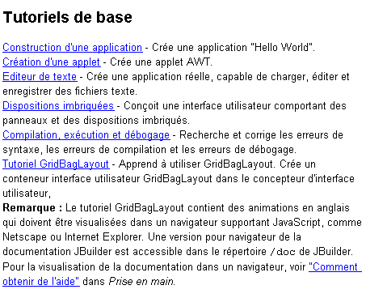
Die grundlegenden Tutorials sind besonders nützlich für den Einstieg in JBuilder. Neben den oben gezeigten gibt es noch viele weitere, und wenn Sie eine Anwendung entwickeln möchten, kann es hilfreich sein, zunächst zu prüfen, ob es ein Tutorial gibt, das Ihnen dabei helfen könnte.
5.2.4.1.3. Inhalt: Das JDK
Wenn Sie die Option „Java 2 JDK 1.3“ auswählen, haben Sie Zugriff auf alle JDK-Bibliotheken. Im Allgemeinen ist dies nicht der richtige Ort, wenn Sie Informationen zu einer bestimmten Klasse benötigen und nicht wissen, in welcher Bibliothek sie sich befindet. Diese Option ist jedoch nützlich, wenn Sie sich einen Überblick über die Java-Bibliotheken verschaffen möchten.
5.2.4.2. Hilfe: Index
Wählen Sie die Registerkarte „Index“ im linken Bereich des Hilfefensters. Mit dieser Option können Sie beispielsweise Hilfe zu einer Klasse finden. Angenommen, Sie möchten die Methoden der Swing-Eingabefelder „JTextField“ kennenlernen. Geben Sie „JTextField“ in das Suchfeld ein:

Die Hilfe zeigt dann Indexeinträge an, die mit dem von Ihnen eingegebenen Text beginnen:
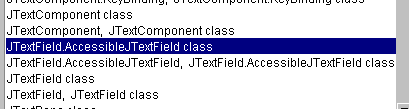
Sie müssen lediglich auf den Eintrag doppelklicken, der Sie interessiert, in diesem Fall die Klasse JTextField. Die Hilfe zu dieser Klasse wird dann im rechten Fenster angezeigt:

Es wird dann eine vollständige Beschreibung der Klasse angezeigt.
5.2.5. Einige Swing-Komponenten
Wir werden nun verschiedene Anwendungen vorstellen, die die gängigsten Swing-Komponenten verwenden, um deren wichtigste Methoden und Eigenschaften zu untersuchen. Für jede Anwendung werden wir die grafische Oberfläche und den entsprechenden Code präsentieren, insbesondere den der Ereignisbehandler.
5.2.5.1. JLabel- und JTextField-Komponenten
Diese beiden Komponenten haben wir bereits kennengelernt. JLabel ist eine Textkomponente und JTextField eine Eingabefeldkomponente. Ihre beiden wichtigsten Methoden sind
String getText() | zum Abrufen des Inhalts des Eingabefelds oder des Textes der Beschriftung |
void setText(String text) | zum Festlegen des Textes im Feld oder auf der Beschriftung |
Die für JTextField üblicherweise verwendeten Ereignisse sind folgende:
actionPerformed | Zeigt an, dass der Benutzer den eingegebenen Text (durch Drücken der Eingabetaste) bestätigt hat |
caretUpdate | zeigt an, dass der Benutzer den Eingabecursor bewegt hat |
inputMethodChanged | zeigt an, dass der Benutzer das Eingabefeld geändert hat |
Hier ist ein Beispiel, das das Ereignis „caretUpdate“ verwendet, um Änderungen in einem Eingabefeld zu verfolgen:

Nr. | Typ | name | Rolle |
1 | JTextField | txtInput | Eingabefeld |
2 | JTextField | txtControl | zeigt den Text aus 1 in Echtzeit an |
3 | JButton | cmdClear | zum Löschen der Felder 1 und 2 |
4 | JButton | cmdExit | , um die Anwendung zu beenden |
Der entsprechende Code für diese Anwendung lautet wie folgt:
import java.awt.*;
....
public class Cadre1 extends JFrame {
JPanel contentPane;
JTextField txtSaisie = new JTextField();
JLabel jLabel1 = new JLabel();
JLabel jLabel2 = new JLabel();
JTextField txtControle = new JTextField();
JButton CmdEffacer = new JButton();
JButton CmdQuitter = new JButton();
/**Building the frame*/
public Cadre1() {
enableEvents(AWTEvent.WINDOW_EVENT_MASK);
try {
jbInit();
}
catch(Exception e) {
e.printStackTrace();
}
}
/**Initialize component*/
private void jbInit() throws Exception {
....
txtSaisie.addCaretListener(new javax.swing.event.CaretListener() {
public void caretUpdate(CaretEvent e) {
txtSaisie_caretUpdate(e);
}
});
...
CmdEffacer.addActionListener(new java.awt.event.ActionListener() {
public void actionPerformed(ActionEvent e) {
CmdEffacer_actionPerformed(e);
}
});
...
CmdQuitter.addActionListener(new java.awt.event.ActionListener() {
public void actionPerformed(ActionEvent e) {
CmdQuitter_actionPerformed(e);
}
});
....
}
/**Replaced, so we can get out when the window is closed*/
protected void processWindowEvent(WindowEvent e) {
...
}
void txtSaisie_caretUpdate(CaretEvent e) {
// the input cursor has moved
txtControle.setText(txtSaisie.getText());
}
void CmdQuitter_actionPerformed(ActionEvent e) {
// quit the application
System.exit(0);
}
void CmdEffacer_actionPerformed(ActionEvent e) {
// delete the contents of the input field
txtSaisie.setText("");
}
}
Hier ist ein Beispiel für die Ausführung:

5.2.5.2. JComboBox-Komponente


Eine JComboBox-Komponente ist eine Dropdown-Liste in Kombination mit einem Eingabefeld: Der Benutzer kann entweder einen Eintrag auswählen (2) oder Text eingeben (1). Standardmäßig sind JComboBoxen nicht editierbar. Sie müssen die Methode setEditable(true) explizit aufrufen, um sie editierbar zu machen. Um mehr über die JComboBox-Klasse zu erfahren, geben Sie JComboBox in den Hilfe-Index ein.
Das JComboBox-Objekt kann auf verschiedene Arten erstellt werden:
new JComboBox() | erstellt eine leere Kombinationsfeld |
new JComboBox (Object[] items) | erstellt eine Kombinationsfeld, das ein Array von Objekten enthält |
new JComboBox(Vector items) | wie oben, jedoch mit einem Vektor von Objekten |
Es mag überraschend erscheinen, dass eine Kombinationsfeld Objekte enthalten kann, wo es doch normalerweise Zeichenfolgen enthält. Optisch ist dies tatsächlich der Fall. Wenn ein JComboBox ein Objekt obj enthält, zeigt es die Zeichenfolge obj.toString() an. Erinnern Sie sich daran, dass jedes Objekt eine von der Klasse Object geerbte toString-Methode besitzt, die eine Zeichenfolge zurückgibt, die das Objekt „repräsentiert“.
Die nützlichen Methoden der JComboBox-Klasse sind wie folgt:
void addItem(Object anObject) | fügt der Combobox ein Objekt hinzu |
int getItemCount() | gibt die Anzahl der Elemente in der Combobox zurück |
Object getItemAt(int i) | gibt das i-te Objekt in der Kombinationsliste zurück |
void insertItemAt(Object anObject, int i) | Fügt unObject an Position i in die Combobox ein |
int getSelectedIndex() | gibt den Index des ausgewählten Elements in der Kombinationsfeld zurück |
Object getSelectedItem() | Gibt das ausgewählte Element in der Kombinationsfeld zurück |
void setSelectedIndex(int i) | wählt Element i in der Kombinationsfeld aus |
void setSelectedItem(Object anObject) | wählt das angegebene Objekt in der Kombinationsfeld aus |
void removeAllItems() | löscht die Combobox |
void removeItemAt(int i) | entfernt das Element mit der Nummer i aus der Kombinationsfeld |
void removeItem(Object anObject) | entfernt das angegebene Objekt aus der Kombinationsfeld |
void setEditable(boolean val) | macht die Kombinationsfeld bearbeitbar (val=true) oder nicht (val=false) |
Wenn ein Element aus der Dropdown-Liste ausgewählt wird, wird das Ereignis actionPerformed ausgelöst, das dann verwendet werden kann, um die Änderung der Auswahl in der Kombinationsfeld zu erkennen. In der folgenden Anwendung verwenden wir dieses Ereignis, um das aus der Liste ausgewählte Element anzuzeigen.

Wir zeigen hier nur den für das Fenster relevanten Code.
public class Cadre1 extends JFrame {
JPanel contentPane;
JComboBox jComboBox1 = new JComboBox();
JLabel jLabel1 = new JLabel();
/**Building the frame*/
public Cadre1() {
enableEvents(AWTEvent.WINDOW_EVENT_MASK);
try {
jbInit();
}
catch(Exception e) {
e.printStackTrace();
}
// treatment - fill the combo
String[] infos={"un","deux","trois","quatre"};
for(int i=0;i<infos.length;i++)
jComboBox1.addItem(infos[i]);
}
/**Initialize component*/
private void jbInit() throws Exception {
....
jComboBox1.addActionListener(new java.awt.event.ActionListener() {
public void actionPerformed(ActionEvent e) {
jComboBox1_actionPerformed(e);
}
});
....
}
void jComboBox1_actionPerformed(ActionEvent e) {
// a new element has been selected - it is displayed
JOptionPane.showMessageDialog(this,jComboBox1.getSelectedItem(),
"actionPerformed",JOptionPane.INFORMATION_MESSAGE);
}
}
5.2.5.3. JList-Komponente
Die Swing-JList-Komponente ist komplexer als ihr Pendant in der AWT-Bibliothek. Es gibt zwei wichtige Unterschiede:
- Der Inhalt der Liste wird von einem Objekt verwaltet, das von der Liste selbst getrennt ist. Hier verwenden wir ein DefaultListModel-Objekt, das wie ein Vector funktioniert, aber das JList-Objekt benachrichtigt, sobald sich sein Inhalt ändert, sodass die visuelle Darstellung der Liste entsprechend aktualisiert wird.
- Die Liste scrollt standardmäßig nicht. Sie müssen die Liste in einen ScrollPane-Container einfügen, der das Scrollen ermöglicht.
Im Quellcode kann eine Liste wie folgt definiert werden:
// the vector of list values
DefaultlistModel valeurs=new DefaultListModel();
// the list itself, to which we associate the vector of its values
JList jList1 = new JList(valeurs);
// the scrolling container in which the list is placed to obtain a scrolling list
JScrollPane jScrollPane1 = new JScrollPane(jList1);
Um die Liste jList1 in den Container jScrollPane1 einzubinden, geht der von JBuilder generierte Code anders vor:
- Deklaration des Containers in den Fensterattributen
- Anschließend wird im jbInit-Code die Liste zum Container hinzugefügt
Um Werte zur obigen JList1-Liste hinzuzufügen, fügen Sie diese einfach zum Werte-Array hinzu:
und Sie sehen dann das folgende Fenster:

Wie ist diese Benutzeroberfläche aufgebaut?
- Wählen Sie eine JScrollPane-Komponente auf der Seite „Swing-Container“ aus und ziehen Sie sie in das Fenster, wobei Sie sie auf die gewünschten Abmessungen anpassen
- Wählen Sie eine JList-Komponente auf der Seite „Swing“ der Komponenten aus und legen Sie sie im JScrollPane-Container ab, wo sie den gesamten Platz einnehmen wird.
Der von JBuilder generierte Code muss leicht geändert werden, um den folgenden Code zu erhalten:
public class interfaceAppli extends JFrame {
JPanel contentPane;
JLabel jLabel1 = new JLabel();
DefaultListModel valeurs=new DefaultListModel();
JList jList1 = new JList(valeurs);
JScrollPane jScrollPane1 = new JScrollPane();
JLabel jLabel2 = new JLabel();
/**Building the frame*/
public interfaceAppli() {
enableEvents(AWTEvent.WINDOW_EVENT_MASK);
try {
jbInit();
}
catch(Exception e) {
e.printStackTrace();
}
// treatment
// include the list in the scrollPane
// init list
for(int i=0;i<10;i++)
valeurs.addElement(""+i);
}
/**Initialize component*/
private void jbInit() throws Exception {
....
// the jList1 list is associated with the jcrollPane1 container
jScrollPane1.getViewport().add(jList1, null);
}
/**Replaced, so we can get out when the window is closed*/
protected void processWindowEvent(WindowEvent e) {
....
}
}
Sehen wir uns nun die wichtigsten Methoden der JList-Klasse an, indem wir im Hilfeindex nach „JList“ suchen. Das JList-Objekt kann auf verschiedene Arten instanziiert werden:

Eine einfache Methode ist die, die wir verwendet haben: Erstellen Sie ein leeres DefaultListModel V und verknüpfen Sie es dann mit der zu erstellenden Liste mithilfe von new JList(V). Der Inhalt der Liste wird nicht vom JList-Objekt verwaltet, sondern von dem Objekt, das die Werte der Liste enthält. Wenn der Inhalt mithilfe eines DefaultListModel-Objekts auf Basis der Vector-Klasse erstellt wurde, können die Methoden der Vector-Klasse verwendet werden, um Elemente zur Liste hinzuzufügen, einzufügen und zu entfernen. Eine Liste kann die Einzel- oder Mehrfachauswahl unterstützen. Dies wird über die Methode setSelectionMode festgelegt:

Sie können den aktuellen Auswahlmodus mit getSelectionMode ermitteln:

Die ausgewählten Elemente können mit den folgenden Methoden abgerufen werden:

Wir wissen, wie man mithilfe des JList(DefaultListModel)-Konstruktors einen Wertvektor mit einer Liste verknüpft. Umgekehrt können wir das DefaultListModel-Objekt aus einer JList wie folgt abrufen:

Wir wissen nun genug, um die folgende Anwendung zu schreiben:
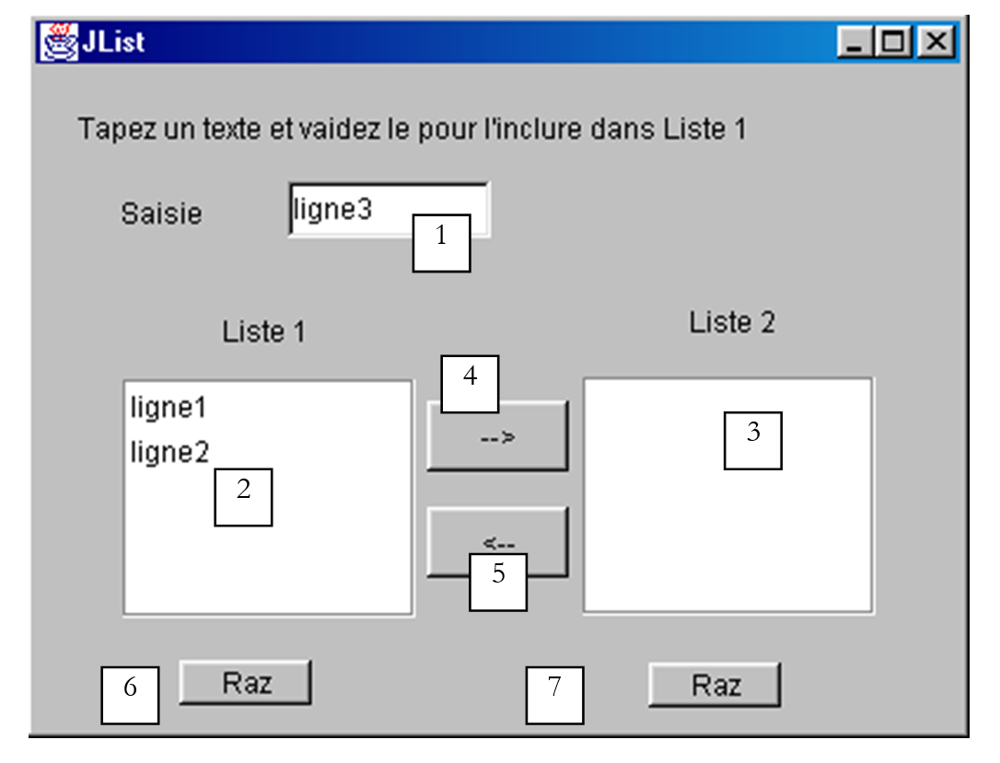
Die Komponenten dieses Fensters sind wie folgt:
Nr. | Typ | Name | Funktion |
1 | JTextField | txtInput | Eingabefeld |
2 | JList | jList1 | Liste in einem Container jScrollPane1 |
3 | JList | jList2 | Liste, die in einem jScrollPane2-Container enthalten ist |
4 | JButton | cmd1To2 | überträgt die ausgewählten Elemente aus Liste 1 in Liste 2 |
5 | JButton | cmd2To1 | macht das Gegenteil |
6 | JButton | cmdRaz1 | löscht Liste 1 |
7 | JButton | cmdRaz2 | Löscht Liste 2 |
Der Benutzer gibt Text in Feld (1) ein und übermittelt ihn. Dies löst das actionPerformed-Ereignis im Eingabefeld aus, wodurch der eingegebene Text zu Liste 1 hinzugefügt wird. Hier ist der Code für diese erste Funktion:
public class interfaceAppli extends JFrame {
JPanel contentPane;
JLabel jLabel1 = new JLabel();
JLabel jLabel2 = new JLabel();
JLabel jLabel3 = new JLabel();
JTextField txtSaisie = new JTextField();
JButton cmd1To2 = new JButton();
JButton cmd2To1 = new JButton();
DefaultListModel v1=new DefaultListModel();
DefaultListModel v2=new DefaultListModel();
JList jList1 = new JList(v1);
JList jList2 = new JList(v2);
JScrollPane jScrollPane1 = new JScrollPane();
JScrollPane jScrollPane2 = new JScrollPane();
JButton cmdRaz1 = new JButton();
JButton cmdRaz2 = new JButton();
JLabel jLabel4 = new JLabel();
/**Building the frame*/
public interfaceAppli() {
enableEvents(AWTEvent.WINDOW_EVENT_MASK);
try {
jbInit();
}
catch(Exception e) {
e.printStackTrace();
}
}//interfaceAppli
/**Initialize component*/
private void jbInit() throws Exception {
...
txtSaisie.addActionListener(new java.awt.event.ActionListener() {
public void actionPerformed(ActionEvent e) {
txtSaisie_actionPerformed(e);
}
});
...
// Jlist1 is placed in the jScrollPane1 container
jScrollPane1.getViewport().add(jList1, null);
// Jlist2 is placed in the jScrollPane2 container
jScrollPane2.getViewport().add(jList2, null);
...
}
/**Replaced, so we can get out when the window is closed*/
protected void processWindowEvent(WindowEvent e) {
...
}
void txtSaisie_actionPerformed(ActionEvent e) {
// the input text has been validated
// we recover it free of its start and end spaces
String texte=txtSaisie.getText().trim();
// if it's empty, we don't want it
if(texte.equals("")){
// error msg
JOptionPane.showMessageDialog(this,"Vous devez taper un texte",
"Erreur",JOptionPane.WARNING_MESSAGE);
// end
return;
}//if
// if it is not empty, it is added to the values in list 1
v1.addElement(texte);
// and empty the input field
txtSaisie.setText("");
}/// txtSaisie_actionperformed
}//class
Der Code zum Übertragen ausgewählter Elemente von einer Liste in eine andere lautet wie folgt:
void cmd1To2_actionPerformed(ActionEvent e) {
// transfer items selected in list 1 to list 2
transfert(jList1,jList2);
}//cmd1To2
void cmd2To1_actionPerformed(ActionEvent e) {
// transfer selected items in jList2 to jList1
transfert(jList2,jList1);
}//cmd2TO1
private void transfert(JList L1, JList L2){
// transfer items selected in list 1 to list 2
// retrieve the array of indices of the elements selected in L1
int[] indices=L1.getSelectedIndices();
// anything to do?
if (indices.length==0) return;
// we retrieve the values of L1
DefaultListModel v1=(DefaultListModel)L1.getModel();
// and L2
DefaultListModel v2=(DefaultListModel)L2.getModel();
for(int i=indices.length-1;i>=0;i--){
// the values selected in L1 are added to L2
v2.addElement(v1.elementAt(indices[i]));
// l1 elements copied into L2 must be deleted from L1
v1.removeElementAt(indices[i]);
}//for
}//transfer
Der Code für die Raz-Tasten ist sehr einfach:
void cmdRaz1_actionPerformed(ActionEvent e) {
// empty list 1
v1.removeAllElements();
}//cmd Raz1
void cmdRaz2_actionPerformed(ActionEvent e) {
// empty list 2
v2.removeAllElements();
}///cmd Raz2
5.2.5.4. JCheckBox-Kontrollkästchen, JButtonRadio-Optionsfelder
Wir schlagen vor, die folgende Anwendung zu schreiben:

Die Fensterkomponenten sind wie folgt:
Nr. | Typ | Name | Funktion |
1 | JButtonRadio | jButtonRadio1 jButtonRadio2 jButtonRadio3 | 3 Optionsfelder, die zur Gruppe buttonGroup1 gehören |
2 | JCheckBox | jCheckBox1 jCheckBox2 jCheckBox3 | 3 Kontrollkästchen |
3 | JList | jList1 | eine Liste in einem Container jScrollPane1 |
4 | ButtonGroup | buttonGroup1 | nicht sichtbare Komponente – dient dazu, die drei Optionsfelder so zu gruppieren, dass bei Auswahl eines Feldes die anderen deaktiviert werden. |
Eine Gruppe von Optionsfeldern kann wie folgt erstellt werden:
- Platzieren Sie die einzelnen Optionsfelder, ohne sich um deren Gruppierung zu kümmern
- Fügen Sie eine Swing-ButtonGroup-Komponente in den Container ein. Diese Komponente ist nicht sichtbar. Sie erscheint daher nicht im Fenster-Designer. Sie ist jedoch in der Struktur sichtbar:

Oben, im Zweig „Other“, sehen Sie die nicht-visuellen Attribute des Fensters. Sobald eine Radiobutton-Gruppe erstellt wurde, können Sie jeden Radiobutton dieser Gruppe zuordnen. Wählen Sie dazu die Eigenschaften des Radiobuttons aus:

und geben Sie in der Eigenschaft „buttonGroup“ des Optionsfelds den Namen der Gruppe ein, in der Sie das Optionsfeld platzieren möchten, hier „buttonGroup1“. Wiederholen Sie diesen Schritt für alle 3 Optionsfelder.
Die wichtigste Methode für Radiobuttons und Checkboxen ist die Methode isSelected(), die angibt, ob die Checkbox oder der Button ausgewählt ist. Der mit der Komponente verknüpfte Text kann mit getText() abgerufen und mit setText(String text) gesetzt werden. Die Checkbox oder der Radiobutton kann mit der Methode setSelected(boolean value) ausgewählt werden.
Wenn ein Optionsfeld oder ein Kontrollkästchen angeklickt wird, wird das Ereignis actionPerformed ausgelöst. Im folgenden Code verwenden wir dieses Ereignis, um Änderungen an den Werten der Optionsfelder und Kontrollkästchen zu verfolgen:
public class interfaceAppli extends JFrame {
JPanel contentPane;
JRadioButton jRadioButton1 = new JRadioButton();
JRadioButton jRadioButton2 = new JRadioButton();
JRadioButton jRadioButton3 = new JRadioButton();
JCheckBox jCheckBox1 = new JCheckBox();
JCheckBox jCheckBox2 = new JCheckBox();
JCheckBox jCheckBox3 = new JCheckBox();
ButtonGroup buttonGroup1 = new ButtonGroup();
JScrollPane jScrollPane1 = new JScrollPane();
DefaultListModel valeurs=new DefaultListModel();
JList jList1 = new JList(valeurs);
/**Building the frame*/
public interfaceAppli() {
enableEvents(AWTEvent.WINDOW_EVENT_MASK);
try {
jbInit();
}
catch(Exception e) {
e.printStackTrace();
}
}
/**Initialize component*/
private void jbInit() throws Exception {
jRadioButton1.setSelected(true);
jRadioButton1.setText("un");
jRadioButton1.setBounds(new Rectangle(57, 31, 49, 23));
jRadioButton1.addActionListener(new java.awt.event.ActionListener() {
public void actionPerformed(ActionEvent e) {
afficheRadioButtons(e);
}
});
jRadioButton2.setBounds(new Rectangle(113, 30, 49, 23));
jRadioButton2.addActionListener(new java.awt.event.ActionListener() {
public void actionPerformed(ActionEvent e) {
afficheRadioButtons(e);
}
});
jRadioButton2.setText("deux");
jRadioButton3.setBounds(new Rectangle(168, 30, 49, 23));
jRadioButton3.addActionListener(new java.awt.event.ActionListener() {
public void actionPerformed(ActionEvent e) {
afficheRadioButtons(e);
}
});
jRadioButton3.setText("trois");
// radio buttons are grouped together
buttonGroup1.add(jRadioButton1);
buttonGroup1.add(jRadioButton2);
buttonGroup1.add(jRadioButton3);
// checkboxes
jCheckBox1.setText("A");
jCheckBox1.setBounds(new Rectangle(58, 69, 32, 17));
jCheckBox1.addActionListener(new java.awt.event.ActionListener() {
public void actionPerformed(ActionEvent e) {
afficheCases(e);
}
});
jCheckBox2.setBounds(new Rectangle(112, 69, 40, 17));
jCheckBox2.addActionListener(new java.awt.event.ActionListener() {
public void actionPerformed(ActionEvent e) {
afficheCases(e);
}
});
jCheckBox2.setText("B");
jCheckBox3.setText("C");
jCheckBox3.setBounds(new Rectangle(170, 69, 37, 17));
jCheckBox3.addActionListener(new java.awt.event.ActionListener() {
public void actionPerformed(ActionEvent e) {
afficheCases(e);
}
});
....
}
/**Replaced, so we can get out when the window is closed*/
protected void processWindowEvent(WindowEvent e) {
...
}
private void afficheRadioButtons(ActionEvent e){
// displays the values of the 3 radio buttons
valeurs.addElement("boutons radio=("+jRadioButton1.isSelected()+","+
jRadioButton2.isSelected()+","+jRadioButton3.isSelected()+")");
}//afficheRadioButtons
void afficheCases(ActionEvent e) {
// displays checkbox values
valeurs.addElement("cases à cocher=["+jCheckBox1.isSelected()+","+
jCheckBox2.isSelected()+","+jCheckBox3.isSelected()+")");
}//afficheCases
}//class
Hier ist ein Ausführungsbeispiel:
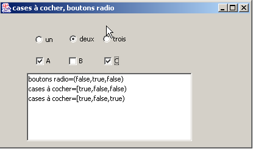
5.2.5.5. JScrollBar-Komponente
Erstellen wir die folgende Anwendung:

Nr. | Typ | Name | Rolle |
1 | JScrollBar | jScrollBar1 | eine horizontale Bildlaufleiste |
2 | JScrollBar | jScrollBar2 | ein vertikaler Schieberegler |
3 | JTextField | txtvalueHS | zeigt den Wert des horizontalen Schiebereglers 1 an – ermöglicht auch die Einstellung dieses Werts |
4 | JTextField | txtVSvalue | zeigt den Wert des vertikalen Schiebereglers 2 an – ermöglicht es Ihnen auch, diesen Wert festzulegen |
- Ein JScrollBar-Schieberegler ermöglicht es dem Benutzer, einen Wert aus einem Bereich von ganzzahligen Werten auszuwählen, die durch die „Leiste“ des Schiebereglers dargestellt werden, entlang derer sich ein Cursor bewegt.
- Bei einem horizontalen Schieberegler stellt das linke Ende den Minimalwert des Bereichs dar, das rechte Ende den Maximalwert und der Cursor den aktuell ausgewählten Wert. Bei einem vertikalen Schieberegler wird der Minimalwert durch das obere Ende und der Maximalwert durch das untere Ende dargestellt. Das Paar (min, max) ist standardmäßig auf (0, 100) gesetzt.
- Ein Klick auf die Enden des Schiebereglers ändert den Wert um einen Schritt (positiv oder negativ), je nachdem, welches Ende angeklickt wurde, wie durch den Parameter unitIncrement definiert, dessen Standardwert 1 ist.
- Ein Klick auf eine der beiden Seiten des Schiebereglers ändert den Wert um eine Schrittweite (positiv oder negativ), je nachdem, welches Ende angeklickt wurde; dies wird als blockIncrement bezeichnet und ist standardmäßig auf 10 gesetzt.
- Diese fünf Werte (min, max, value, unitIncrement, blockIncrement) können mit den Methoden getMinimum(), getMaximum(), getValue(), getUnitIncrement() und getBlockIncrement() abgerufen werden, die alle eine Ganzzahl zurückgeben, und können mit den Methoden setMinimum(int min), setMaximum(int max), setValue(int val), setUnitIncrement(int uInc) und setBlockIncrement(int bInc)
Bei der Verwendung von JScrollBar-Komponenten gibt es einige Dinge zu beachten. Erstens ist sie in der Swing-Komponentenpalette zu finden:
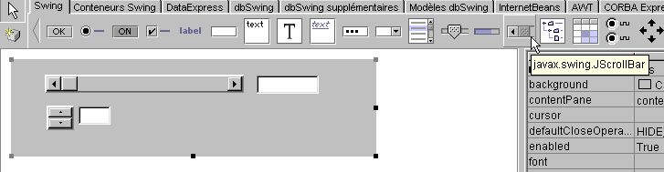
Wenn Sie sie auf den Container ziehen, ist sie standardmäßig vertikal ausgerichtet. Mit der unten stehenden Eigenschaft „orientation“ können Sie sie horizontal ausrichten:
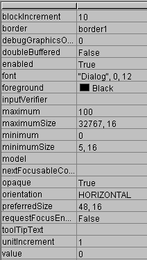
Im obigen Eigenschaftenfenster sehen Sie, dass Sie Zugriff auf die Eigenschaften „minimum“, „maximum“, „value“, „unitIncrement“ und „blockIncrement“ der JScrollBar haben. Sie können diese daher bereits zur Entwurfszeit festlegen. Wenn Sie eine Bildlaufleiste auf dem Container platzieren, wird deren „Bildlaufleiste“ zunächst nicht angezeigt:

Sie können dieses Problem beheben, indem Sie der Komponente einen Rahmen hinzufügen. Dies geschieht über die Eigenschaft border, die verschiedene Werte annehmen kann:

Hier ist ein Beispiel für „RaisedBevel“:

Wenn Sie auf das obere Ende eines vertikalen Schiebereglers klicken, verringert sich dessen Wert. Dies mag den durchschnittlichen Benutzer überraschen, der normalerweise erwartet, dass der Wert „steigt“. Wir lösen dieses Problem, indem wir unitIncrement und blockIncrement auf negative Werte setzen.
Wie verfolgt man Änderungen an einem Schieberegler? Wenn sich sein Wert ändert, wird das Ereignis adjustmentValueChanged ausgelöst. Verknüpfen Sie einfach eine Prozedur mit diesem Ereignis, um über jede Änderung des Wertes der Bildlaufleiste benachrichtigt zu werden.

Der relevante Code für unsere Anwendung lautet wie folgt:
....
public class cadreAppli extends JFrame {
JPanel contentPane;
JScrollBar jScrollBar1 = new JScrollBar();
Border border1;
JTextField txtValeurHS = new JTextField();
JScrollBar jScrollBar2 = new JScrollBar();
JTextField txtValeurVS = new JTextField();
TitledBorder titledBorder1;
/**Building the frame*/
public cadreAppli() {
enableEvents(AWTEvent.WINDOW_EVENT_MASK);
try {
jbInit();
}
catch(Exception e) {
e.printStackTrace();
}
}
/**Initialize component*/
private void jbInit() throws Exception {
...
// a border for scrollbars
border1 = BorderFactory.createBevelBorder(BevelBorder.RAISED,Color.white,Color.white,new Color(134, 134, 134),new Color(93, 93, 93));
// no border title
titledBorder1 = new TitledBorder("");
jScrollBar1.setOrientation(JScrollBar.HORIZONTAL);
jScrollBar1.setBorder(BorderFactory.createRaisedBevelBorder());
jScrollBar1.setAutoscrolls(true);
jScrollBar1.setBounds(new Rectangle(37, 17, 218, 20));
jScrollBar1.addAdjustmentListener(new java.awt.event.AdjustmentListener() {
public void adjustmentValueChanged(AdjustmentEvent e) {
jScrollBar1_adjustmentValueChanged(e);
}
});
txtValeurHS.addActionListener(new java.awt.event.ActionListener() {
public void actionPerformed(ActionEvent e) {
txtValeurHS_actionPerformed(e);
}
});
jScrollBar2.setBounds(new Rectangle(39, 51, 30, 27));
jScrollBar2.addAdjustmentListener(new java.awt.event.AdjustmentListener() {
public void adjustmentValueChanged(AdjustmentEvent e) {
jScrollBar2_adjustmentValueChanged(e);
}
});
jScrollBar2.setAutoscrolls(true);
jScrollBar2.setUnitIncrement(-1);
jScrollBar2.setBorder(BorderFactory.createRaisedBevelBorder());
txtValeurVS.addActionListener(new java.awt.event.ActionListener() {
public void actionPerformed(ActionEvent e) {
txtValeurVS_actionPerformed(e);
}
});
......
}
/**Replaced, so we can get out when the window is closed*/
protected void processWindowEvent(WindowEvent e) {
...
}
void jScrollBar1_adjustmentValueChanged(AdjustmentEvent e) {
// the value of scrollbar 1 has changed
txtValeurHS.setText(""+jScrollBar1.getValue());
}
void jScrollBar2_adjustmentValueChanged(AdjustmentEvent e) {
// scrollbar 2 value has changed
txtValeurVS.setText(""+jScrollBar2.getValue());
}
void txtValeurHS_actionPerformed(ActionEvent e) {
// set the horizontal scrollbar value
setValeur(jScrollBar1,txtValeurHS);
}
void txtValeurVS_actionPerformed(ActionEvent e) {
// set the vertical scrollbar value
setValeur(jScrollBar2,txtValeurVS);
}
private void setValeur(JScrollBar jS, JTextField jT){
// sets the scrollbar value jS with the field text jT
int valeur=0;
try{
valeur=Integer.parseInt(jT.getText());
jS.setValue(valeur);
}
catch (Exception e){
// error is displayed
afficher(""+e);
}//try-catch
}//setValeur
void afficher(String message){
// displays a message in a box
JOptionPane.showMessageDialog(this,message,"Menus",JOptionPane.INFORMATION_MESSAGE);
}//display
}
Hier ist ein Ausführungsbeispiel:

5.2.5.6. JTextArea-Komponente
Die JTextArea-Komponente ist eine Komponente, in die Sie mehrere Textzeilen eingeben können, im Gegensatz zur JTextField-Komponente, in die Sie nur eine einzige Zeile eingeben können. Wenn diese Komponente in einem scrollbaren Container (JScrollPane) platziert wird, erhalten Sie ein scrollbares Texteingabefeld. Diese Art von Komponente findet sich beispielsweise in einer E-Mail-Anwendung, in der der Text der zu versendenden Nachricht in eine JTextArea-Komponente eingegeben wird. Die Standardmethoden sind String getText(), um den Inhalt des Textbereichs abzurufen, setText(String text), um Text im Textbereich einzufügen, und append(String text), um Text an den bereits im Textbereich vorhandenen Text anzuhängen. Betrachten Sie die folgende Anwendung:

Nr. | Typ | Name | Rolle |
1 | JTextArea | txtText | ein mehrzeiliger Textbereich |
2 | JButton | cmdDisplay | zeigt den Inhalt von 1 in einem Dialogfeld an |
3 | JButton | cmdClear | löscht den Inhalt von 1 |
4 | JTextField | txtAdd | Text, der dem Text in 1 hinzugefügt wird, wenn die Eingabe durch Drücken der Eingabetaste bestätigt wird. |
5 | JScrollPane | jScrollPane1 | Scrollbarer Container, in den Textfeld 1 eingefügt wurde, um ein scrollbares Textfeld zu erstellen. |
Der entsprechende Code lautet wie folgt:
.....
public class cadreAppli extends JFrame {
JPanel contentPane;
JLabel jLabel1 = new JLabel();
JButton cmdAfficher = new JButton();
JScrollPane jScrollPane1 = new JScrollPane();
JTextArea txtTexte = new JTextArea();
JLabel jLabel2 = new JLabel();
JTextField txtAjout = new JTextField();
JButton cmdEffacer = new JButton();
/**Building the frame*/
public cadreAppli() {
enableEvents(AWTEvent.WINDOW_EVENT_MASK);
try {
jbInit();
}
catch(Exception e) {
e.printStackTrace();
}
}
/**Initialize component*/
private void jbInit() throws Exception {
cmdAfficher.addActionListener(new java.awt.event.ActionListener() {
public void actionPerformed(ActionEvent e) {
cmdAfficher_actionPerformed(e);
}
});
txtAjout.addActionListener(new java.awt.event.ActionListener() {
public void actionPerformed(ActionEvent e) {
txtAjout_actionPerformed(e);
}
});
cmdEffacer.addActionListener(new java.awt.event.ActionListener() {
public void actionPerformed(ActionEvent e) {
cmdEffacer_actionPerformed(e);
}
});
.......
jScrollPane1.getViewport().add(txtTexte, null);
}
/**Replaced, so we can get out when the window is closed*/
protected void processWindowEvent(WindowEvent e) {
........
}
void cmdAfficher_actionPerformed(ActionEvent e) {
// displays the contents of TextArea
afficher(txtTexte.getText());
}
void afficher(String message){
// displays a message in a box
JOptionPane.showMessageDialog(this,message,"Suivi",JOptionPane.INFORMATION_MESSAGE);
}// display
void cmdEffacer_actionPerformed(ActionEvent e) {
txtTexte.setText("");
}//cmdEffacer_actionPerformed
void txtAjout_actionPerformed(ActionEvent e) {
// add text
txtTexte.append(txtAjout.getText());
// raz addition
txtAjout.setText("");
}//
}
5.2.6. Mausereignisse
Beim Zeichnen in einem Container ist es wichtig, die Mausposition zu kennen, beispielsweise um beim Klicken einen Punkt anzuzeigen. Mausbewegungen lösen Ereignisse in dem Container aus, in dem sie stattfinden. Hier sind zum Beispiel die von JBuilder für einen JPanel-Container bereitgestellten Ereignisse:

mouseClicked | Mausklick |
mouseDragged | Maus bewegt sich, linke Taste gedrückt |
mouseEntered | Die Maus hat gerade den Bereich des Containers betreten |
mouseExited | Die Maus hat gerade den Bereich des Containers verlassen |
mouseMoved | Die Maus bewegt sich |
mousePressed | Linke Maustaste gedrückt |
mouseReleased | Linke Maustaste losgelassen |
Hier ist ein Programm, das Ihnen hilft, besser zu verstehen, wann die verschiedenen Mausereignisse auftreten:

Nr. | Typ | Name | Rolle |
1 | JTextField | txtPosition | zur Anzeige der Mausposition im Container (möglicherweise MouseMoved) |
2 | JList | lstDisplay | zur Anzeige von anderen Mausereignissen als MouseMoved |
3 | JButton | cmdClear | zum Löschen des Inhalts von 2 |
Wenn Sie dieses Programm ausführen, erhalten Sie bei einem Klick folgende Ausgabe:

Ereignisse werden von oben in der Liste gestapelt. Daher zeigt der obige Screenshot, dass ein Klick drei Ereignisse in der folgenden Reihenfolge auslöst:
- MousePressed, wenn die Taste gedrückt wird
- MouseReleased, wenn die Maustaste losgelassen wird
- MouseClicked, was darauf hinweist, dass die Abfolge der beiden vorherigen Ereignisse als Klick gewertet wird. Dies könnte ein Doppelklick sein. Oben weist die Angabe clickCount=1 jedoch darauf hin, dass es sich um einen Einzelklick handelt.
Wenn Sie nun auf die Schaltfläche klicken, die Maus bewegen und die Schaltfläche loslassen:

Hier sehen wir die drei Ereignisse:
- MousePressed, wenn die Taste zunächst gedrückt wird
- MouseDragged, wenn Sie die Maus bei gedrückter Taste bewegen
- MouseReleased, wenn Sie die Taste loslassen
In den beiden obigen Beispielen sehen wir, dass ein Mausereignis verschiedene Informationen enthält, darunter die Mauskoordinaten (x, y), zum Beispiel (408, 65) in der ersten Zeile oben.
Wenn wir so fortfahren, stellen wir fest, dass das MouseExited-Ereignis ausgelöst wird, sobald die Maus den Container verlässt oder über eine seiner Komponenten fährt. Im letzteren Fall erhält der Container das MouseExited-Ereignis und die Komponente das MouseEntered-Ereignis. Das Gegenteil tritt ein, wenn die Maus die Komponente verlässt, um zum Container zurückzukehren.
Was passiert bei einem Doppelklick?

Wir erhalten genau dieselben Ereignisse wie bei einem einfachen Klick. Der einzige Unterschied besteht darin, dass das Ereignis die Information clickCount=2 enthält (siehe oben), was darauf hinweist, dass tatsächlich ein Doppelklick stattgefunden hat.
Der relevante Code für diese Anwendung lautet wie folgt:
public class Cadre1 extends JFrame {
JPanel contentPane;
JLabel jLabel1 = new JLabel();
JTextField txtPosition = new JTextField();
JScrollPane jScrollPane1 = new JScrollPane();
DefaultListModel valeurs=new DefaultListModel();
JList lstAffichage = new JList(valeurs);
JButton cmdEffacer = new JButton();
/**Building the frame*/
public Cadre1() {
enableEvents(AWTEvent.WINDOW_EVENT_MASK);
try {
jbInit();
}
catch(Exception e) {
e.printStackTrace();
}
}
/**Initialize component*/
private void jbInit() throws Exception {
contentPane.addMouseMotionListener(new java.awt.event.MouseMotionAdapter() {
public void mouseMoved(MouseEvent e) {
contentPane_mouseMoved(e);
}
public void mouseDragged(MouseEvent e) {
contentPane_mouseDragged(e);
}
});
contentPane.addMouseListener(new java.awt.event.MouseAdapter() {
public void mouseEntered(MouseEvent e) {
contentPane_mouseEntered(e);
}
public void mouseExited(MouseEvent e) {
contentPane_mouseExited(e);
}
public void mousePressed(MouseEvent e) {
contentPane_mousePressed(e);
}
public void mouseClicked(MouseEvent e) {
contentPane_mouseClicked(e);
}
public void mouseReleased(MouseEvent e) {
contentPane_mouseReleased(e);
}
});
cmdEffacer.addActionListener(new java.awt.event.ActionListener() {
public void actionPerformed(ActionEvent e) {
cmdEffacer_actionPerformed(e);
}
});
jScrollPane1.getViewport().add(lstAffichage, null);
...............
}
/**Replaced, so we can get out when the window is closed*/
protected void processWindowEvent(WindowEvent e) {
.........
}
void contentPane_mouseMoved(MouseEvent e) {
txtPosition.setText("("+e.getX()+","+e.getY()+")");
}
void contentPane_mouseDragged(MouseEvent e) {
afficher(e);
}
void contentPane_mouseEntered(MouseEvent e) {
afficher(e);
}
void afficher(MouseEvent e){
// displays the event in the lstAffichage list
valeurs.insertElementAt(e,0);
}
void contentPane_mouseExited(MouseEvent e) {
afficher(e);
}
void contentPane_mousePressed(MouseEvent e) {
afficher(e);
}
void contentPane_mouseClicked(MouseEvent e) {
afficher(e);
}
void contentPane_mouseReleased(MouseEvent e) {
afficher(e);
}
void cmdEffacer_actionPerformed(ActionEvent e) {
// deletes the list
valeurs.removeAllElements();
}
}
5.2.7. Erstellen eines Fensters mit einem Menü
Sehen wir uns nun an, wie man mit JBuilder ein Fenster mit einem Menü erstellt. Wir erstellen das folgende Fenster:
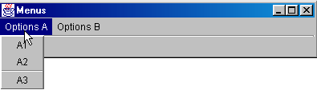

Erstellen Sie ein neues Projekt, beginnend mit einem leeren Fenster. Wählen Sie aus der Komponentenliste „Swing Containers“ die Komponente JMenuBar aus (siehe Abbildung 1 unten) und ziehen Sie sie auf das Fenster, das Sie gerade entwerfen.

Im Entwurfsfenster wird nichts angezeigt, aber die JMenuBar-Komponente erscheint im Strukturfenster Ihres Fensters:

Doppelklicken Sie auf das Element „jMenuBar1“ oben, um das Menü im Entwurfsmodus aufzurufen:

1 | Fügen Sie einen Menüpunkt ein |
2 | Fügen Sie eine Trennlinie ein |
3 | Ein verschachteltes Menü einfügen |
4 | Menüpunkt entfernen |
5 | Menüpunkt deaktivieren |
6 | Menüpunkt mit Kontrollkästchen |
7 | Umschaltfeld umschalten |
Um Ihren ersten Menüpunkt zu erstellen, geben Sie oben in Feld A „Optionen A“ ein und anschließend unten in der folgenden Reihenfolge: A1, A2, Trennzeichen, A3, A4.

Dann daneben:

Verwende Werkzeug 3, um anzuzeigen, dass B3 ein verschachteltes Untermenü ist.
Während wir das Menü entwerfen, entwickelt sich die logische Struktur unseres Fensters weiter:

Wenn wir unsere Anwendung jetzt ausführen, sehen wir ein leeres Fenster ohne Menü. Wir müssen das erstellte Menü unserem Fenster zuordnen. Wählen Sie dazu in der Fensterstruktur das Objekt „this“ aus:

Sie haben dann Zugriff auf die Eigenschaften von „this“:

Eine davon ist „JMenuBar“, mit der das Menü festgelegt wird, das dem Fenster zugeordnet wird. Klicken Sie in die Zelle rechts neben „JMenuBar“. Daraufhin werden alle von Ihnen erstellten Menüs angezeigt. In unserem Fall haben wir hier nur „jMenuBar1“. Wählen Sie diese aus.
Führen Sie die Anwendung aus (F9):

Jetzt haben wir ein Menü, aber die Optionen haben noch keine Funktion. Menüoptionen werden wie Komponenten behandelt: Sie haben Eigenschaften und Ereignisse. Wählen Sie in der Menüstruktur die Option jMenuItem1 aus:

Sie haben nun Zugriff auf deren Eigenschaften und Ereignisse:

Wählen Sie die Seite „Ereignisse“ aus und klicken Sie auf die Zelle rechts neben dem Ereignis „actionPerformed“: Dies ist das Ereignis, das ausgelöst wird, wenn Sie auf einen Menüpunkt klicken. Standardmäßig ist eine Handler-Prozedur vorhanden. Doppelklicken Sie darauf, um den Code aufzurufen:

Wir schreiben den folgenden einfachen Code:
void jMenuItem1_actionPerformed(ActionEvent e) {
afficher("L'option A1 a été sélectionnée");
}
void afficher(String message){
// displays a message in a box
JOptionPane.showMessageDialog(this,message,"Menus",JOptionPane.INFORMATION_MESSAGE);
}//display
Führen Sie die Anwendung aus und wählen Sie Option A1, um die folgende Meldung anzuzeigen:

Der relevante Code für diese Anwendung lautet wie folgt:
.....
public class Cadre1 extends JFrame {
JPanel contentPane;
BorderLayout borderLayout1 = new BorderLayout();
JMenuBar jMenuBar1 = new JMenuBar();
JMenu jMenu1 = new JMenu();
JMenuItem jMenuItem1 = new JMenuItem();
JMenuItem jMenuItem2 = new JMenuItem();
JMenuItem jMenuItem3 = new JMenuItem();
JMenuItem jMenuItem4 = new JMenuItem();
JMenu jMenu2 = new JMenu();
JMenuItem jMenuItem5 = new JMenuItem();
JMenuItem jMenuItem6 = new JMenuItem();
JMenu jMenu3 = new JMenu();
JMenuItem jMenuItem7 = new JMenuItem();
JMenuItem jMenuItem8 = new JMenuItem();
JMenuItem jMenuItem9 = new JMenuItem();
/**Building the frame*/
public Cadre1() {
enableEvents(AWTEvent.WINDOW_EVENT_MASK);
try {
jbInit();
}
catch(Exception e) {
e.printStackTrace();
}
}
/**Initialize component*/
private void jbInit() throws Exception {
// the window is associated with a menu
this.setJMenuBar(jMenuBar1);
jMenu1.setText("Options A");
jMenuItem1.setText("A1");
jMenuItem1.addActionListener(new java.awt.event.ActionListener() {
public void actionPerformed(ActionEvent e) {
jMenuItem1_actionPerformed(e);
}
});
jMenuItem2.setText("A2");
jMenuItem3.setText("A3");
jMenuItem4.setText("A4");
jMenu2.setText("Options B");
jMenuItem5.setText("B1");
jMenuItem6.setText("B2");
jMenu3.setText("B3");
jMenuItem7.setText("B31");
jMenuItem8.setText("B32");
jMenuItem9.setText("B4");
jMenuBar1.add(jMenu1);
jMenuBar1.add(jMenu2);
jMenu1.add(jMenuItem1);
jMenu1.add(jMenuItem2);
jMenu1.addSeparator();
jMenu1.add(jMenuItem3);
jMenu1.add(jMenuItem4);
jMenu2.add(jMenuItem5);
jMenu2.add(jMenuItem6);
jMenu2.add(jMenu3);
jMenu2.add(jMenuItem9);
jMenu3.add(jMenuItem7);
jMenu3.add(jMenuItem8);
}
/**Replaced, so we can get out when the window is closed*/
protected void processWindowEvent(WindowEvent e) {
....
}
void jMenuItem1_actionPerformed(ActionEvent e) {
afficher("L'option A1 a été sélectionnée");
}
void afficher(String message){
// displays a message in a box
JOptionPane.showMessageDialog(this,message,"Menus",JOptionPane.INFORMATION_MESSAGE);
}//display
}
5.3. Dialogfelder
5.3.1. Meldungsfelder
Wir haben die Klasse JOptionPane bereits zur Anzeige von Meldungen verwendet. Daher der folgende Code:
import javax.swing.*;
public class dialog1 {
public static void main(String arg[]){
JOptionPane.showMessageDialog(null,"Un message","Titre de la boîte",JOptionPane.INFORMATION_MESSAGE);
}
}
zeigt das folgende Dialogfeld an:

Wenn dieses Fenster geschlossen wird, verschwindet es, aber der Ausführungs-Thread, in dem es lief, wird nicht angehalten. Dieses Phänomen tritt normalerweise nicht auf. Dialogfelder werden innerhalb einer Anwendung verwendet, die an einer bestimmten Stelle eine System.exit(n)-Anweisung verwendet, um alle Threads anzuhalten. Wir werden dies in den folgenden Beispielen berücksichtigen, die alle auf demselben Modell basieren. Unter DOS kann die Anwendung mit Strg-C unterbrochen werden. Verwenden Sie in JBuilder die Option „Run/Reset Program“ (Strg-F2). Außerdem ist das erste Argument von showMessageDialog hier null. Dies ist normalerweise nicht der Fall; typischerweise ist es this, wobei this auf das Hauptfenster der Anwendung verweist.
5.3.2. Look and Feel
Das Erscheinungsbild des obigen Dialogfelds könnte anders aussehen. Sie können dieses Erscheinungsbild mithilfe der Klasse javax.swing.UIManager konfigurieren. Als wir den von JBuilder für unser erstes Fenster generierten Code kommentierten, stießen wir auf eine Anweisung, auf die wir nicht näher eingegangen sind:
Die Methode setLookAndFeel der Klasse UIManager (UI = User Interface) ermöglicht es Ihnen, das Erscheinungsbild grafischer Oberflächen festzulegen. Die Klasse UIManager verfügt über eine Methode, mit der Sie die möglichen „Erscheinungsbilder“ für Oberflächen bestimmen können:
static UIManager.LookAndFeelInfo[] | getInstalledLookAndFeels() |
Die Methode gibt ein Array von LookAndFeelInfo-Objekten zurück. Diese Klasse verfügt über eine Methode:
String | getClassName() |
die den Namen der Klasse zurückgibt, die ein bestimmtes Look-and-Feel „implementiert“. Probieren wir das folgende Programm aus:
import javax.swing.*;
public class LookAndFeels {
// displays available looks and feels
public static void main(String[] args) {
// iste of installed look and feels
UIManager.LookAndFeelInfo[] lf=UIManager.getInstalledLookAndFeels();
// display
for(int i=0;i<lf.length;i++){
System.out.println(lf[i].getClassName());
}//for
}//hand
}//class
Dies führt zu folgenden Ergebnissen:
javax.swing.plaf.metal.MetalLookAndFeel
com.sun.java.swing.plaf.motif.MotifLookAndFeel
com.sun.java.swing.plaf.windows.WindowsLookAndFeel
Es scheint also drei „unterschiedliche“ „Darstellungsweisen“ zu geben. Schauen wir uns unser Programm zur Anzeige von Meldungen noch einmal an und probieren wir die verschiedenen möglichen Darstellungsweisen aus:
import javax.swing.*;
public class LookAndFeel2 {
// displays available looks and feels
public static void main(String[] args) {
// list of installed look and feels
UIManager.LookAndFeelInfo[] lf=UIManager.getInstalledLookAndFeels();
// display
for(int i=0;i<lf.length;i++){
// appearance manager
try{
UIManager.setLookAndFeel(lf[i].getClassName());
}catch(Exception ex){
System.err.println(ex.getMessage());
}//catch
// message
JOptionPane.showMessageDialog(null,"Un message",lf[i].getClassName(),JOptionPane.INFORMATION_MESSAGE);
}//for
}//hand
}//class
Die Ausführung erzeugt folgende Anzeigen:
 |  | 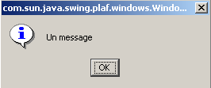 |
die von rechts nach links den „Themen“ Metal, Pattern und Windows entsprechen.
5.3.3. Bestätigungsfelder
Die Klasse JOptionPane verfügt über die Methode showConfirmDialog zum Anzeigen von Bestätigungsdialogen mit den Schaltflächen „Ja“, „Nein“ und „Abbrechen“. Es gibt mehrere überladene Versionen der Methode showConfirmDialog. Wir werden eine davon betrachten:
static int | showConfirmDialog(Component parentComponent, Object message, String title, int optionType) |
parentComponent | die übergeordnete Komponente des Dialogfelds. Oft das Fenster oder der Wert null |
message | die anzuzeigende Meldung |
title | der Titel des Dialogfelds |
optionType | JOptionPane.YES_NO_OPTION: Ja, Nein-Schaltflächen JOptionPane.YES_NO_CANCEL_OPTION: Ja-, Nein- und Abbrechen-Schaltflächen |
Das von der Methode zurückgegebene Ergebnis lautet:
JOptionPane.YES_OPTION | Der Benutzer hat auf „Ja“ geklickt |
JOptionPane.NO_OPTION | Der Benutzer hat auf „Nein“ geklickt |
JOptionPane.CANCEL_OPTION | Der Benutzer hat auf „Abbrechen“ geklickt |
JOptionPane.CLOSED_OPTION | Der Benutzer hat das Dialogfeld geschlossen |
Hier ist ein Beispiel:
import javax.swing.*;
public class confirm1 {
public static void main(String[] args) {
// displays confirmation boxes
int réponse;
affiche(JOptionPane.showConfirmDialog(null,"Voulez-vous continuer ?","Confirmation",JOptionPane.YES_NO_OPTION));
affiche(JOptionPane.showConfirmDialog(null,"Voulez-vous continuer ?","Confirmation",JOptionPane.YES_NO_CANCEL_OPTION));
}//hand
private static void affiche(int réponse){
// indicates the type of response
switch(réponse){
case JOptionPane.YES_OPTION :
System.out.println("Oui");
break;
case JOptionPane.NO_OPTION :
System.out.println("Non");
break;
case JOptionPane.CANCEL_OPTION :
System.out.println("Annuler");
break;
case JOptionPane.CLOSED_OPTION :
System.out.println("Fermeture");
break;
}//switch
}//poster
}//class
 | 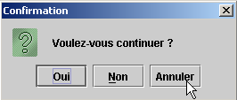 |
In der Konsole werden die Meldungen „Nein“ und „Abbrechen“ angezeigt.
5.3.4. Eingabefeld
Die Klasse JOptionPane ermöglicht es Ihnen außerdem, Daten mithilfe der Methode showInputDialog einzugeben. Auch hier gibt es mehrere überladene Methoden. Wir stellen eine davon vor:
static String | showInputDialog(Component parentComponent, Object message, String title, int messageType) |
Die Argumente sind dieselben, die wir bereits mehrfach gesehen haben. Die Methode gibt die vom Benutzer eingegebene Zeichenfolge zurück. Hier ein Beispiel:
import javax.swing.*;
public class input1 {
public static void main(String[] args) {
// input
System.out.println("Chaîne saisie ["+
JOptionPane.showInputDialog(null,"Quel est votre nom","Saisie du nom",JOptionPane.QUESTION_MESSAGE )
+ "]");
}//hand
}//class
Die Anzeige des Eingabedialogs:

Konsolenausgabe:
5.4. Auswahlfelder
Wir werden uns nun einige vordefinierte Dateiauswahldialoge in Java 2 ansehen:
JFileChooser | ein Dateiauswahldialog zur Auswahl einer Datei aus der Dateistruktur |
JColorChooser | ein Auswahldialog zur Auswahl einer Farbe |
5.4.1. JFileChooser-Auswahldialog
Wir werden die folgende Anwendung erstellen:

Die Steuerelemente sind wie folgt:
Nr. | Typ | Name | Rolle |
0 | JScrollPane | jScrollPane1 | Scrollbarer Container für Textfeld 1 |
1 | JTextArea selbst innerhalb des JScrollPane | txtText | vom Benutzer eingegebener oder aus einer Datei geladener Text |
2 | JButton | btnSave | speichert den Text aus 1 in einer Textdatei |
3 | JButton | btnLoad | ermöglicht es Ihnen, den Inhalt einer Textdatei in 1 zu laden |
4 | JButton | btnClear | löscht den Inhalt von 1 |
Es wird ein nicht-visuelles Steuerelement verwendet: jFileChooser1. Dieses wird aus der JBuilder-Swing-Container-Palette ausgewählt:

Wir ziehen die Komponente in das Designfenster, jedoch außerhalb des Formulars. Sie erscheint in der Komponentenliste:

Wir stellen nun den entsprechenden Programmcode zur Verfügung, um einen Überblick zu geben:
import java.awt.*;
import java.awt.event.*;
import javax.swing.*;
import javax.swing.filechooser.FileFilter;
import java.io.*;
public class dialogues extends JFrame {
// frame components
JPanel contentPane;
JButton btnSauvegarder = new JButton();
JButton btnCharger = new JButton();
JButton btnEffacer = new JButton();
JScrollPane jScrollPane1 = new JScrollPane();
JTextArea txtTexte = new JTextArea();
JFileChooser jFileChooser1 = new JFileChooser();
// file filters
javax.swing.filechooser.FileFilter filtreTxt = null;
//Building the frame
public dialogues() {
enableEvents(AWTEvent.WINDOW_EVENT_MASK);
try {
jbInit();
// other initializations
moreInit();
}
catch(Exception e) {
e.printStackTrace();
}
}
// moreInit
private void moreInit(){
// window construction initializations
// filter *.txt
filtreTxt = new javax.swing.filechooser.FileFilter(){
public boolean accept(File f){
// do we accept f?
return f.getName().toLowerCase().endsWith(".txt");
}//accept
public String getDescription(){
// filter description
return "Fichiers Texte (*.txt)";
}//getDescription
};
// we add the filter
jFileChooser1.addChoosableFileFilter(filtreTxt);
// we also want to filter all files
jFileChooser1.setAcceptAllFileFilterUsed(true);
// set the start directory of the FileChooser box to the current directory
jFileChooser1.setCurrentDirectory(new File("."));
}
//Initialize component
private void jbInit() throws Exception {
.......................
}
//Replaced, so we can get out when the window is closed
protected void processWindowEvent(WindowEvent e) {
......................
}
}
void btnCharger_actionPerformed(ActionEvent e) {
// file selection using a JFileChooser object
// we set the initial filter
jFileChooser1.setFileFilter(filtreTxt);
// the selection box is displayed
int returnVal = jFileChooser1.showOpenDialog(this);
// did the user choose anything?
if(returnVal == JFileChooser.APPROVE_OPTION) {
// put the file in the text field
lireFichier(jFileChooser1.getSelectedFile());
}//if
}//btnCharger_actionPerformed
// lireFichier
private void lireFichier(File fichier){
// displays the contents of the text file file in the text field
// delete the text field
txtTexte.setText("");
// some data
BufferedReader IN=null;
String ligne=null;
try{
// open file in read mode
IN=new BufferedReader(new FileReader(fichier));
// read the file line by line
while((ligne=IN.readLine())!=null){
txtTexte.append(ligne+"\n");
}//while
// close file
IN.close();
}catch(Exception ex){
// an error has occurred
txtTexte.setText(""+ex);
}//catch
}
// delete
void btnEffacer_actionPerformed(ActionEvent e) {
// delete the text box
txtTexte.setText("");
}
// save
void btnSauvegarder_actionPerformed(ActionEvent e) {
// saves the contents of the text box to a file
// we set the initial filter
jFileChooser1.setFileFilter(filtreTxt);
// the backup selection box is displayed
int returnVal = jFileChooser1.showSaveDialog(this);
// did the user choose anything?
if(returnVal == JFileChooser.APPROVE_OPTION) {
// we write the contents of the text box to file
écrireFichier(jFileChooser1.getSelectedFile());
}//if
}
// lireFichier
private void écrireFichier(File fichier){
// writes the contents of the text box to file
// some data
PrintWriter PRN=null;
try{
// open file for writing
PRN=new PrintWriter(new FileWriter(fichier));
// write the contents of the text box
PRN.print(txtTexte.getText());
// close file
PRN.close();
}catch(Exception ex){
// an error has occurred
txtTexte.setText(""+ex);
}//catch
}
Wir werden den Code für die Methoden btnEffacer_Click, lireFichier und écrireFichier nicht kommentieren, da sie nichts Neues enthalten. Wir konzentrieren uns auf die Klasse JFileChooser und deren Verwendung. Diese Klasse ist komplex – ein bisschen „chaotisch“. Hier werden wir nur die folgenden Methoden verwenden:
addChoosableFilter(FileFilter) | legt die zur Auswahl stehenden Dateitypen fest |
setAcceptAllFileFilterUsed(boolean) | gibt an, ob der Typ „Alle Dateien“ zur Auswahl angeboten werden soll oder nicht |
File getSelectedFile() | die vom Benutzer ausgewählte Datei (File) |
int showSaveDialog() | Methode, die den Speicherdialog anzeigt. Gibt ein Ergebnis vom Typ int zurück. Der Wert jFileChooser.APPROVE_OPTION gibt an, dass der Benutzer eine gültige Auswahl getroffen hat. Andernfalls hat der Benutzer entweder die Auswahl abgebrochen oder es ist ein Fehler aufgetreten. |
setCurrentDirectory | zum Festlegen des Startverzeichnisses, von dem aus der Benutzer das Dateisystem durchsuchen wird |
setFileFilter(FileFilter) | zum Festlegen des aktiven Filters |
Die Methode showSaveDialog zeigt einen Auswahldialog an, der in etwa wie folgt aussieht:

1 | Dropdown-Liste, die mit der Methode addChoosableFilter erstellt wurde. Sie enthält sogenannte Auswahlfilter, die durch die Klasse FileFilter repräsentiert werden. Es ist Aufgabe des Entwicklers, diese Filter zu definieren und zur Liste hinzuzufügen 1. |
2 | aktuelles Verzeichnis, das durch die Methode `setCurrentDirectory` festgelegt wurde, sofern diese Methode verwendet wurde; andernfalls ist das aktuelle Verzeichnis der Ordner „Eigene Dateien“ unter Windows oder das Home-Verzeichnis unter Unix. |
3 | Name der Datei, die ausgewählt oder direkt vom Benutzer eingegeben wurde. Ist über die Methode getSelectedFile() verfügbar |
4 | Schaltflächen „Speichern“/„Abbrechen“. Wenn die Schaltfläche „Speichern“ verwendet wird, gibt die Methode showSaveDialog das Ergebnis jFileChooser.APPROVE_OPTION zurück |
Wie werden die Dateifilter in der Dropdown-Liste 1 erstellt? Die Filter werden mit der folgenden Methode zur Liste 1 hinzugefügt:
addChoosableFilter(FileFilter) | legt die zur Auswahl stehenden Dateitypen fest |
der Klasse *JFileChooser*. Nun müssen wir uns noch mit der Klasse FileFilter befassen. Dabei handelt es sich um die Klasse *javax.swing.filechooser.FileFilter*, eine abstrakte Klasse – das heißt, eine Klasse, die nicht instanziiert, sondern nur abgeleitet werden kann. Sie ist wie folgt definiert:
FileFilter() | Konstruktor |
boolean accept(File) | gibt an, ob die Datei f dem Filter entspricht oder nicht |
String getDescription() | Filterbeschreibung als Zeichenkette |
Nehmen wir ein Beispiel. Wir möchten, dass die Dropdown-Liste 1 einen Filter zur Auswahl von *.txt-Dateien mit der Beschreibung „Textdateien (*.txt)“ anbietet.
- Wir müssen eine Klasse erstellen, die von der Klasse FileFilter abgeleitet ist
- Verwenden Sie die Methode boolean accept(File f), um true zurückzugeben, wenn der Name der Datei f auf .txt endet
- Verwenden Sie die String-Methode getDescription(), um die Beschreibung auf „Textdateien (*.txt)“ zu setzen
Dieser Filter könnte in unserer Anwendung wie folgt definiert werden:
javax.swing.filechooser.FileFilter filtreTxt = new javax.swing.filechooser.FileFilter(){
public boolean accept(File f){
// do we accept f?
return f.getName().toLowerCase().endsWith(".txt");
}//accept
public String getDescription(){
// filter description
return "Fichiers Texte (*.txt)";
}//getDescription
};
Dieser Filter würde mit der folgenden Anweisung zur Liste der Filter für das jFileChooser1-Objekt hinzugefügt werden:
All dies und einige weitere Initialisierungen werden in der Methode moreInit durchgeführt, die beim Erstellen des Fensters ausgeführt wird (siehe das vollständige Programm oben). Der Code für die Schaltfläche „Speichern“ lautet wie folgt:
void btnSauvegarder_actionPerformed(ActionEvent e) {
// saves the contents of the text box to a file
// we set the initial filter
jFileChooser1.setFileFilter(filtreTxt);
// the backup selection box is displayed
int returnVal = jFileChooser1.showSaveDialog(this);
// did the user choose anything?
if(returnVal == JFileChooser.APPROVE_OPTION) {
// we write the contents of the text box to file
écrireFichier(jFileChooser1.getSelectedFile());
}//if
}
Die Abfolge der Schritte ist wie folgt:
- Wir setzen den aktiven Filter auf *.txt, damit der Benutzer in erster Linie nach diesem Dateityp suchen kann. Der Filter „Alle Dateien“ ist ebenfalls vorhanden. Er wurde in der Prozedur moreInit hinzugefügt. Wir haben also zwei Filter.
- Der Dateiauswahldialog wird angezeigt. Hier wird die Kontrolle an den Benutzer übergeben, der über den Dialog eine Datei aus dem Dateisystem auswählt.
- Wenn der Benutzer das Auswahlfeld verlässt, prüfen wir den Rückgabewert, um festzustellen, ob wir das Textfeld speichern sollen. Ist dies der Fall, muss es in der Datei gespeichert werden, die über die Methode getSelectedFile abgerufen wurde.
Der Code für die Schaltfläche „Laden“ ist dem Code für die Schaltfläche „Speichern“ sehr ähnlich.
void btnCharger_actionPerformed(ActionEvent e) {
// file selection using a JFileChooser object
// we set the initial filter
jFileChooser1.setFileFilter(filtreTxt);
// the selection box is displayed
int returnVal = jFileChooser1.showOpenDialog(this);
// did the user choose anything?
if(returnVal == JFileChooser.APPROVE_OPTION) {
// put the file in the text field
lireFichier(jFileChooser1.getSelectedFile());
}//if
}//btnCharger_actionPerformed
Es gibt zwei Unterschiede:
- Um das Dateiauswahldialogfeld anzuzeigen, verwenden wir die Methode showOpenDialog anstelle der Methode showSaveDialog. Das angezeigte Dialogfeld ähnelt demjenigen, das von der Methode showSaveDialog angezeigt wird.
- Wenn der Benutzer erfolgreich eine Datei ausgewählt hat, rufen wir die Methode „readFile“ anstelle der Methode „writeFile“ auf.
5.4.1.1. Auswahldialoge „JColorChooser“ und „JFontChooser“
Wir setzen das vorherige Beispiel fort, indem wir zwei neue Schaltflächen hinzufügen:

Nr. | Typ | Name | Rolle |
6 | JButton | btnColor | zum Festlegen der Textfarbe des Textfelds |
7 | JButton | btnFont | zum Festlegen der Schriftart des Textfelds |
Die JColorChooser-Komponente, die einen Farbauswahldialog anzeigt, finden Sie in der Liste der Swing-Komponenten in JBuilder:

Wir ziehen diese Komponente in das Designfenster, jedoch außerhalb des Formulars. Sie ist im Formular nicht sichtbar, aber dennoch in der Komponentenliste des Fensters vorhanden:

Die Klasse JColorChooser ist sehr einfach aufgebaut. Wir zeigen den Farbauswahldialog mit der Methode int showDialog an:
static Color | showDialog(Component component, String title, Color initialColor) |
Component component | die übergeordnete Komponente des Farbwählers, typischerweise ein JFrame-Fenster |
String title | der Titel in der Titelleiste des Auswahlfelds |
Farbe intialColor | Die ursprünglich im Farbwähler ausgewählte Farbe |
Wenn der Benutzer eine Farbe auswählt, gibt die Methode eine Farbe zurück; andernfalls gibt sie null zurück. Der mit der Schaltfläche „Farbe“ verknüpfte Code lautet wie folgt:
void btnCouleur_actionPerformed(ActionEvent e) {
// choice of text color using JColorChooser component
Color couleur;
if((couleur=jColorChooser1.showDialog(this,"Choix d'une couleur",Color.BLACK))!=null){
// set the color of the characters in the text box
txtTexte.setForeground(couleur);
}//if
}
Die Klasse „Color“ ist in „java.awt.Color“ definiert. Dort sind verschiedene Konstanten definiert, darunter „Color.BLACK“ für die Farbe Schwarz. Der angezeigte Auswahldialog sieht wie folgt aus

Seltsamerweise bietet die Swing-Bibliothek keine Klasse zur Auswahl einer Schriftart. Glücklicherweise stehen online Java-Ressourcen zur Verfügung. Durch die Suche nach dem Stichwort „JFontChooser“, das ein naheliegender Name für eine solche Klasse zu sein scheint, finden wir mehrere Optionen. Das folgende Beispiel gibt uns die Möglichkeit, JBuilder so zu konfigurieren, dass Pakete verwendet werden, die nicht in der ursprünglichen Installation enthalten sind.
Das abgerufene Paket heißt swingextras.jar und wurde im Ordner <jdk>\jre\lib\perso abgelegt, wobei <jdk> für das Installationsverzeichnis des von JBuilder verwendeten JDK steht. Es hätte auch an einem anderen Ort abgelegt werden können.
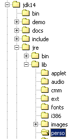 |  |
Sehen wir uns den Inhalt des Pakets „SwingExtras.jar“ an:
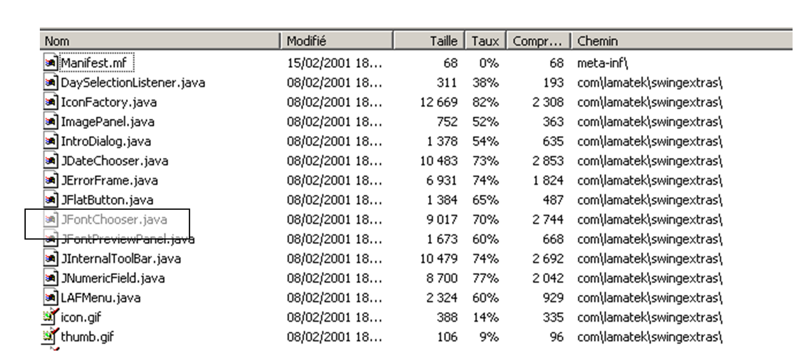
Es enthält den Java-Quellcode für die im Paket enthaltenen Komponenten. Außerdem enthält es die Klassen selbst:

Beachten Sie, dass die Klasse JFontChooser in diesem Archiv eigentlich com.lamatek.swingextras.JFontChooser heißt. Wenn Sie nicht den vollständigen Namen schreiben möchten, müssen Sie am Anfang Ihres Programms Folgendes einfügen:
Wie finden der Compiler und die Java Virtual Machine dieses neue Paket? Im Falle der direkten Verwendung des JDK wurde dies bereits erläutert, und der Leser findet die Details im Abschnitt über Java-Pakete. Hier beschreiben wir die Vorgehensweise bei der Verwendung mit JBuilder. Pakete werden im Menü „Options/Configure JDKs“ konfiguriert:

1 | Über die Schaltfläche „Edit“ (1) können Sie JBuilder mitteilen, welches JDK verwendet werden soll. In diesem Beispiel war JBuilder mit JDK 1.3.1 gebündelt. Als JDK 1.4 veröffentlicht wurde, wurde es separat von JBuilder installiert, und wir haben über die Schaltfläche „Edit“ JBuilder angewiesen, von nun an JDK 1.4 zu verwenden, indem wir dessen Installationsverzeichnis angegeben haben |
2 | Stammverzeichnis des derzeit von JBuilder verwendeten JDK |
3 | Liste der von JBuilder verwendeten Java-Archive (.jar). Über die Schaltfläche „Hinzufügen“ (4) können Sie weitere hinzufügen |
4 | Über die Schaltfläche „Hinzufügen“ (4) können Sie neue Pakete hinzufügen, die JBuilder sowohl zum Kompilieren als auch zum Ausführen von Programmen verwendet. Wir haben sie hier verwendet, um das Paket „SwingExtras.jar“ (5) hinzuzufügen |
Nun ist JBuilder ordnungsgemäß für die Verwendung der Klasse JFontChooser konfiguriert. Allerdings benötigen wir Zugriff auf die Definition dieser Klasse, um sie korrekt nutzen zu können. Das Archiv swingextras.jar enthält HTML-Dateien, die zur Verwendung extrahiert werden könnten. Dies ist jedoch nicht notwendig. Die in den .jar-Dateien enthaltene Java-Dokumentation ist direkt über JBuilder zugänglich. Konfigurieren Sie dazu die Registerkarte „Dokumentation“ (6) oben. Das folgende neue Fenster erscheint:

Über die Schaltfläche „Hinzufügen“ können wir festlegen, dass die Datei „SwingExtras.jar“ nach Dokumentation durchsucht werden soll. Sobald dies erledigt ist, sehen wir, dass wir tatsächlich Zugriff auf die Dokumentation zu „SwingExtras.jar“ haben. Dies bietet mehrere Vorteile:
- Wenn Sie mit der Eingabe der Import-Anweisung beginnen
wird Ihnen von JBuilder eine Hilfe angezeigt:
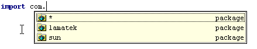
Das Paket com.lamatek wurde erfolgreich gefunden.
- Nun, im folgenden Programm:
Wenn Sie bei dem Schlüsselwort JFontChooser die Taste F1 drücken, wird die Hilfe zu dieser Klasse angezeigt:
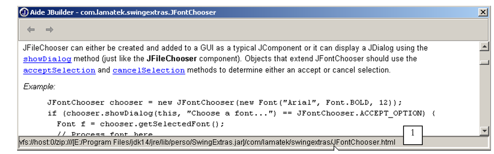
In der Statusleiste 1 sehen wir, dass tatsächlich eine HTML-Datei aus dem Paket „swingextras.jar“ verwendet wird. Das oben gezeigte Beispiel ist anschaulich genug, um uns zu ermöglichen, den Code für die Schaltfläche „Font“ in unserer Anwendung zu schreiben:
void btnPolice_actionPerformed(ActionEvent e) {
// choice of text font using JFontChooser component
jFontChooser1 = new JFontChooser(new Font("Arial", Font.BOLD, 12));
if (jFontChooser1.showDialog(this, "Choix d'une police") == JFontChooser.ACCEPT_OPTION) {
// change the font in the text box
txtTexte.setFont(jFontChooser1.getSelectedFont());
}//if
}
Der durch die obige showDialog-Methode angezeigte Auswahldialog sieht wie folgt aus:
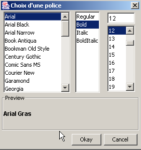
5.5. Die grafische Anwendung „Steuerberechnung“
Wir kehren zur Anwendung IMPOTS zurück, die wir bereits zweimal behandelt haben. Wir werden ihr nun eine grafische Benutzeroberfläche hinzufügen:

Die Steuerelemente sind wie folgt
Nr. | Typ | Name | Rolle |
1 | JRadioButton | rdYes | aktiviert, wenn verheiratet |
2 | JRadioButton | rdNo | Markiert, wenn nicht verheiratet |
3 | JSpinner | spinChildren | Anzahl der Kinder des Steuerpflichtigen Minimum=0, Maximum=20, Schrittweite=1 |
4 | JTextField | txtSalary | Jahresgehalt des Steuerpflichtigen in F |
5 | JLabel | lblTaxes | Höhe der fälligen Steuer |
6 | JTextField | txtStatus | Feld für Statusmeldung – nicht editierbar |
Das Menü sieht wie folgt aus:
Hauptoption | Sekundäre Option | Name | Rolle |
Steuern | |||
Initialisieren | mnuInitialize | lädt die für die Berechnung benötigten Daten aus einer Textdatei | |
Berechnen | mnuCalculate | berechnet die fällige Steuer, wenn alle erforderlichen Daten vorhanden und korrekt sind | |
Löschen | mnuClear | setzt das Formular auf den Ausgangszustand zurück | |
Beenden | mnuExit | schließt die Anwendung |
Bedienungsregeln
- Das Menü „Berechnen“ bleibt deaktiviert, solange das Gehaltsfeld leer ist
- Wenn sich bei der Berechnung herausstellt, dass das Gehalt falsch ist, wird eine Fehlermeldung angezeigt:

Das Programm ist unten aufgeführt. Es verwendet die Klasse *impots, die* im Kapitel über Klassen erstellt wurde. Ein Teil des von JBuilder automatisch generierten Codes wurde hier nicht wiedergegeben.
import java.awt.*;
import java.awt.event.*;
import javax.swing.*;
import javax.swing.filechooser.FileFilter;
import java.io.*;
import java.util.*;
import javax.swing.event.*;
public class frmImpots extends JFrame {
// window components
JPanel contentPane;
JMenuBar jMenuBar1 = new JMenuBar();
JMenu jMenu1 = new JMenu();
JMenuItem mnuInitialiser = new JMenuItem();
JMenuItem mnuCalculer = new JMenuItem();
JMenuItem mnuEffacer = new JMenuItem();
JMenuItem mnuQuitter = new JMenuItem();
JLabel jLabel1 = new JLabel();
JFileChooser jFileChooser1 = new JFileChooser();
JTextField txtStatus = new JTextField();
JRadioButton rdOui = new JRadioButton();
JRadioButton rdNon = new JRadioButton();
JLabel jLabel2 = new JLabel();
JLabel jLabel3 = new JLabel();
JTextField txtSalaire = new JTextField();
JLabel jLabel4 = new JLabel();
JLabel jLabel5 = new JLabel();
JLabel lblImpots = new JLabel();
JLabel jLabel7 = new JLabel();
ButtonGroup buttonGroup1 = new ButtonGroup();
JSpinner spinEnfants=null;
FileFilter filtreTxt=null;
// class attributes
double[] limites=null;
double[] coeffr=null;
double[] coeffn=null;
impots objImpots=null;
//Building the frame
public frmImpots() {
enableEvents(AWTEvent.WINDOW_EVENT_MASK);
try {
jbInit();
}
catch(Exception e) {
e.printStackTrace();
}
// other initializations
moreInit();
}
// form initialization
private void moreInit(){
// calculate menu disabled
mnuCalculer.setEnabled(false);
// inhibited input zones
txtSalaire.setEditable(false);
txtSalaire.setBackground(Color.WHITE);
// status field
txtStatus.setBackground(Color.WHITE);
// spinner Children - between 0 and 20 children
spinEnfants=new JSpinner(new SpinnerNumberModel(0,0,20,1));
spinEnfants.setBounds(new Rectangle(137,60,40,27));
contentPane.add(spinEnfants);
// filter *.txt for selection box
filtreTxt = new javax.swing.filechooser.FileFilter(){
public boolean accept(File f){
// do we accept f?
return f.getName().toLowerCase().endsWith(".txt");
}//accept
public String getDescription(){
// filter description
return "Fichiers Texte (*.txt)";
}//getDescription
};
// add the *.txt filter
jFileChooser1.addChoosableFileFilter(filtreTxt);
// we also want to filter all files
jFileChooser1.setAcceptAllFileFilterUsed(true);
// set the box's start directory FileChooser
jFileChooser1.setCurrentDirectory(new File("."));
}//moreInit
//Initialize component
private void jbInit() throws Exception {
................
}
//Replaced, so we can get out when the window is closed
protected void processWindowEvent(WindowEvent e) {
.....................
}
void mnuQuitter_actionPerformed(ActionEvent e) {
// quit the application
System.exit(0);
}
void mnuInitialiser_actionPerformed(ActionEvent e) {
// load the data file
// selected with the JFileChooser1 selection box
jFileChooser1.setFileFilter(filtreTxt);
if (jFileChooser1.showOpenDialog(this)!=JFileChooser.APPROVE_OPTION)
return;
// process the selected file
try{
// dATA READING
lireFichier(jFileChooser1.getSelectedFile());
// create impots object
objImpots=new impots(limites,coeffr,coeffn);
// confirmation
txtStatus.setText("Données chargées");
// salary can be modified
txtSalaire.setEditable(true);
// no more chgt possible
mnuInitialiser.setEnabled(false);
}catch(Exception ex){
// problem
txtStatus.setText("Erreur : " + ex.getMessage());
// end
return;
}//catch
}
private void lireFichier(File fichier) throws Exception {
// data tables
ArrayList aLimites=new ArrayList();
ArrayList aCoeffR=new ArrayList();
ArrayList aCoeffN=new ArrayList();
String[] champs=null;
// open file in read mode
BufferedReader IN=new BufferedReader(new FileReader(fichier));
// read the file line by line
// they are of the limit form coeffr coeffn
String ligne=null;
int numLigne=0; // line number courannte
while((ligne=IN.readLine())!=null){
// one more line
numLigne++;
// break down the line into fields
champs=ligne.split("\\s+");
// 3 fields?
if(champs.length!=3)
throw new Exception("ligne " + numLigne + "erronée dans fichier des données");
// we retrieve the three fields
aLimites.add(champs[0]);
aCoeffR.add(champs[1]);
aCoeffN.add(champs[2]);
}//while
// close file
IN.close();
// data transfer to bounded arrays
int n=aLimites.size();
limites=new double[n];
coeffr=new double[n];
coeffn=new double[n];
for(int i=0;i<n;i++){
limites[i]=Double.parseDouble((String)aLimites.get(i));
coeffr[i]=Double.parseDouble((String)aCoeffR.get(i));
coeffn[i]=Double.parseDouble((String)aCoeffN.get(i));
}//for
}
void mnuCalculer_actionPerformed(ActionEvent e) {
// tAX CALCULATION
// salary verification
int salaire=0;
try{
salaire=Integer.parseInt(txtSalaire.getText().trim());
if(salaire<0) throw new Exception();
}catch (Exception ex){
// error msg
txtStatus.setText("Salaire incorrect. Recommencez");
// focus on wrong field
txtSalaire.requestFocus();
// back to interface
return;
}
// no. of children
Integer InbEnfants=(Integer)spinEnfants.getValue();
// tAX CALCULATION
lblImpots.setText(""+objImpots.calculer(rdOui.isSelected(),InbEnfants.intValue(),salaire));
// delete status msg
txtStatus.setText("");
}
void txtSalaire_caretUpdate(CaretEvent e) {
// the salary has changed - update the calculate menu
mnuCalculer.setEnabled(! txtSalaire.getText().trim().equals(""));
}
void mnuEffacer_actionPerformed(ActionEvent e) {
// raz du formulaire
rdNon.setSelected(true);
spinEnfants.getModel().setValue(new Integer(0));
txtSalaire.setText("");
mnuCalculer.setEnabled(false);
lblImpots.setText("");
}
}
Hier haben wir eine Komponente verwendet, die erst ab JDK 1.4 verfügbar ist: den JSpinner. Es handelt sich um einen Spinner, mit dem der Benutzer in diesem Fall die Anzahl der Kinder festlegen kann. Diese Swing-Komponente war in der Swing-Komponentenleiste von JBuilder 6, das für Tests verwendet wurde, nicht verfügbar. Dies verhindert jedoch nicht ihre Verwendung, auch wenn die Vorgehensweise etwas komplizierter ist als bei Komponenten, die in der Komponentenleiste verfügbar sind. Tatsächlich können Sie die JSpinner-Komponente während der Entwurfsphase nicht auf das Formular ziehen. Sie müssen dies zur Laufzeit tun. Sehen wir uns den Code an, der dies bewirkt:
// spinner Children - between 0 and 20 children
spinEnfants=new JSpinner(new SpinnerNumberModel(0,0,20,1));
spinEnfants.setBounds(new Rectangle(137,60,40,27));
contentPane.add(spinEnfants);
Die erste Zeile erstellt die JSpinner-Komponente. Diese Komponente kann für verschiedene Zwecke verwendet werden, nicht nur als Ganzzahl-Spinner wie hier. Das Argument des JSpinner-Konstruktors ist ein Zahlen-Spinner-Modell, das vier Parameter akzeptiert (Wert, Min, Max, Schrittweite). Die Komponente hat folgende Form:
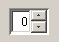
value | in der Komponente angezeigter Anfangswert |
min | Mindestwert, der in der Komponente angezeigt werden kann |
max | Maximalwert, der in der Komponente angezeigt werden kann |
Inkrement | Inkrementwert des angezeigten Werts bei Verwendung der Auf-/Ab-Pfeile der Komponente |
Der Wert der Komponente wird über ihre getValue-Methode abgerufen, die einen Wert vom Typ Object zurückgibt. Daher ist eine Typumwandlung erforderlich, um die benötigte Ganzzahl zu erhalten:
// nbre d'enfants
Integer InbEnfants=(Integer)spinEnfants.getValue();
// calcul de l'impôt
lblImpots.setText(""+objImpots.calculer(rdOui.isSelected(),
InbEnfants.intValue(),salaire));
Sobald die JSpinner-Komponente definiert ist, wird sie im Fenster platziert:
Zunächst muss der Benutzer die Menüoption „Initialize“ verwenden, wodurch mithilfe des Konstruktors ein Steuerobjekt erstellt wird
der Klasse „impots“ erstellt. Erinnern Sie sich daran, dass dies als Beispiel im Kapitel über Klassen definiert wurde. Schlagen Sie bei Bedarf in diesem Kapitel nach. Die drei vom Konstruktor benötigten Arrays werden aus dem Inhalt einer Textdatei mit folgendem Format gefüllt:
12620.0 | 0 | 0 |
13190 | 0,05 | 631 |
15.640 | 0,1 | 1.290,5 |
24.740 | 0,15 | 2.072,5 |
31.810 | 0,2 | 3.309,5 |
39.970 | 0,25 | 4.900 |
48.360 | 0,3 | 6.898,5 |
55.790 | 0,35 | 9.316,5 |
92.970 | 0,4 | 12.106 |
127.860 | 0,45 | 16.754,5 |
151.250 | 0,50 | 23.147,5 |
172.040 | 0,55 | 30.710 |
195.000 | 0,60 | 39.312 |
0 | 0,65 | 49062 |
Jede Zeile enthält drei Zahlen, die durch mindestens ein Leerzeichen voneinander getrennt sind. Diese Textdatei wird vom Benutzer mithilfe einer JFileChooser-Komponente ausgewählt. Sobald das *impots*-Objekt erstellt wurde, muss der Benutzer nur noch die drei erforderlichen Angaben eingeben: verheiratet oder nicht, Anzahl der Kinder, Jahresgehalt, und die calculate-Methode der impots-Klasse aufrufen. Der Vorgang kann mehrfach wiederholt werden. Das *impots*-Objekt selbst wird nur einmal erstellt, wenn die Option *Initialize* verwendet wird.
5.6. Applets schreiben
5.6.1. Einführung
Sobald Sie eine Anwendung mit einer grafischen Benutzeroberfläche geschrieben haben, ist es relativ einfach, diese in ein Applet umzuwandeln. Auf Rechner A gespeichert, kann es über einen Webbrowser von Rechner B über das Internet heruntergeladen werden. Die ursprüngliche Anwendung wird somit von vielen Benutzern gemeinsam genutzt, und dies ist der Hauptvorteil der Umwandlung einer Anwendung in ein Applet. Allerdings kann nicht jede Anwendung auf diese Weise umgewandelt werden: Um Probleme für den Benutzer zu vermeiden, der ein Applet in seinem Browser ausführt, ist die Applet-Umgebung eingeschränkt:
- Ein Applet kann weder auf der Festplatte des Benutzers lesen noch darauf schreiben
- es kann nur mit dem Rechner kommunizieren, von dem es vom Browser heruntergeladen wurde.
Dies sind erhebliche Einschränkungen. Sie bedeuten beispielsweise, dass eine Anwendung, die Informationen aus einer Datei oder einer Datenbank lesen muss, diese über eine Relay-Anwendung anfordern muss, die sich auf dem Server befindet, von dem sie heruntergeladen wurde.
Der allgemeine Aufbau einer einfachen Webanwendung sieht wie folgt aus:

- Der Client fordert ein HTML-Dokument vom Webserver an, in der Regel über einen Browser. Dieses Dokument kann ein Applet enthalten, das als eigenständige grafische Anwendung innerhalb des vom Browser des Clients angezeigten HTML-Dokuments fungiert.
- Dieses Applet hat möglicherweise Zugriff auf Daten, jedoch nur auf Daten, die sich auf dem Webserver befinden. Es hat weder Zugriff auf die Ressourcen des Client-Rechners, auf dem es ausgeführt wird, noch auf die Ressourcen anderer Rechner im Netzwerk außer demjenigen, von dem es heruntergeladen wurde.
5.6.2. Die JApplet-Klasse
5.6.2.1. Definition
Eine Anwendung kann von einem Webbrowser geladen werden, wenn es sich um eine Instanz der Klasse java.applet.Applet oder der Klasse javax.swing.JApplet handelt. Letztere leitet sich von der ersteren ab, die wiederum von der Klasse „Panel“ abgeleitet ist, welche wiederum von der Klasse „Container“ abgeleitet ist. Da eine Instanz von „Applet“ oder „JApplet“ vom Typ „Container“ ist, kann sie daher Komponenten (Component) wie Schaltflächen, Kontrollkästchen, Listen usw. enthalten. Hier sind einige Anmerkungen zur Rolle der verschiedenen Methoden:
Methode | Funktion |
public void destroy(); | Löscht die Applet-Instanz |
public AppletContext getAppletContext(); | Ruft den Ausführungskontext des Applets ab (das HTML-Dokument, in dem es sich befindet, andere Applets im selben Dokument usw.) |
public String getAppletInfo(); | Gibt eine Zeichenfolge zurück, die Informationen über das Applet enthält |
public AudioClip getAudioClip(URL url); | Lädt die durch die URL angegebene Audiodatei |
public AudioClip getAudioClip(URL url, String name); | Lädt die durch URL/name angegebene Audiodatei |
public URL getCodeBase(); | gibt die URL des Applets zurück |
public URL getDocumentBase(); | gibt die URL des HTML-Dokuments zurück, das das Applet enthält |
public Image getImage(URL url); | Ruft das durch die URL angegebene Bild ab |
public Image getImage(URL url, String name); | ruft das durch URL/name angegebene Bild ab |
public String getParameter(String name); | ruft den Wert des Parameters „name“ ab, der im <applet>-Tag des HTML-Dokuments enthalten ist, das das Applet enthält. |
public void init(); | Diese Methode wird vom Browser aufgerufen, wenn das Applet zum ersten Mal gestartet wird |
public boolean isActive(); | Applet-Status |
public void play(URL url); | Spielt die durch die URL angegebene Audiodatei ab |
public void play(URL url, String name); | Spielt die durch URL/name angegebene Audiodatei ab |
public void resize(Dimension d); | Legt die Größe des Applet-Frames fest |
public void resize(int width, int height); | dasselbe |
public final void setStub(AppletStub stub); | |
public void showStatus(String msg); | zeigt eine Meldung in der Statusleiste des Applets an |
public void start(); | Diese Methode wird vom Browser jedes Mal aufgerufen, wenn das Dokument, das das Applet enthält, angezeigt wird |
public void stop(); | Diese Methode wird vom Browser aufgerufen, sobald das Dokument, das das Applet enthält, zugunsten eines anderen verlassen wird (der Benutzer ändert die URL) |
Die Klasse JApplet hat mehrere Verbesserungen gegenüber der Klasse Applet eingeführt, insbesondere die Möglichkeit, JMenuBar-Komponenten (d. h. Menüs) zu enthalten, was mit der Klasse Applet nicht möglich war.
5.6.2.2. Ausführen eines Applets: die Methoden init, start und stop
Wenn ein Browser ein Applet lädt, ruft er drei seiner Methoden auf:
init | Diese Methode wird aufgerufen, wenn das Applet zum ersten Mal geladen wird. Sie sollte daher die für die Anwendung erforderlichen Initialisierungen enthalten. |
start | Diese Methode wird aufgerufen, sobald das Dokument, das das Applet enthält, zum aktuellen Dokument des Browsers wird. Wenn ein Benutzer also ein Applet lädt, werden die Methoden init und start in dieser Reihenfolge ausgeführt. Wenn der Benutzer das Dokument verlässt, um ein anderes anzuzeigen, wird die Methode stop ausgeführt. Kehrt der Benutzer später zu diesem Dokument zurück, wird die Methode start ausgeführt. |
stop | Diese Methode wird jedes Mal aufgerufen, wenn der Benutzer das Dokument verlässt, das das Applet enthält. |
Für viele Applets ist nur die init-Methode erforderlich. Die start- und stop-Methoden sind nur notwendig, wenn die Anwendung Aufgaben (Threads) startet, die parallel und kontinuierlich laufen, oft ohne Wissen des Benutzers. Wenn der Benutzer das Dokument verlässt, verschwindet der sichtbare Teil der Anwendung, aber diese Hintergrundaufgaben laufen weiter. Dies ist oft unnötig. Wir nutzen dann den Aufruf der stop-Methode durch den Browser, um sie zu stoppen. Kehrt der Benutzer zum Dokument zurück, nutzen wir den Aufruf der start-Methode durch den Browser, um sie neu zu starten.
Nehmen wir zum Beispiel ein Applet, das eine Uhr in seiner grafischen Oberfläche hat. Diese Uhr wird von einer Hintergrundaufgabe (Thread) verwaltet. Wenn der Benutzer die Seite des Applets im Browser verlässt, macht es keinen Sinn, die Uhr weiterlaufen zu lassen, da sie unsichtbar geworden ist: In der stop-Methode des Applets stoppen wir den Thread, der die Uhr verwaltet. In der „start“-Methode starten wir ihn neu, sodass der Benutzer, wenn er zur Seite des Applets zurückkehrt, eine Uhr vorfindet, die auf dem neuesten Stand ist.
5.6.3. Umwandlung einer grafischen Anwendung in ein Applet
Wir gehen hier davon aus, dass diese Umwandlung möglich ist, d. h., dass sie den Ausführungsbeschränkungen für Applets entspricht. Eine Anwendung wird durch die *main*-Methode einer ihrer Klassen gestartet:
Eine solche Anwendung wird wie folgt in ein Applet umgewandelt:
import java.applet.JApplet;
…
public class application extends JApplet{
…
public void init(){
…
}
…
}// end of class
Beachten Sie folgende Punkte:
- Die Klasse „Application“ leitet sich nun von der Klasse „JApplet“ ab
- Die Methode „main“ wird durch die Methode „init“ ersetzt.
Betrachten wir als Beispiel noch einmal eine Anwendung, die wir bereits behandelt haben: die Listenverwaltung.
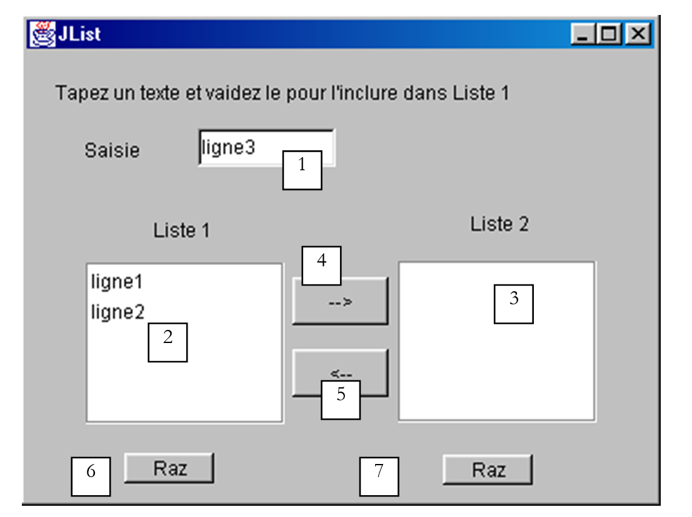
Dieses Fenster besteht aus folgenden Komponenten:
Nr. | Typ | Name | Funktion |
1 | JTextField | txtInput | Eingabefeld |
2 | JList | jList1 | Liste in einem Container jScrollPane1 |
3 | JList | jList2 | Liste, die in einem jScrollPane2-Container enthalten ist |
4 | JButton | cmd1To2 | überträgt die ausgewählten Elemente aus Liste 1 in Liste 2 |
5 | JButton | cmd2To1 | macht das Gegenteil |
6 | JButton | cmdRaz1 | löscht Liste 1 |
7 | JButton | cmdRaz2 | Liste 2 löschen |
Das Anwendungsgerüst sah wie folgt aus:
public class interfaceAppli extends JFrame {
JPanel contentPane;
JLabel jLabel1 = new JLabel();
JLabel jLabel2 = new JLabel();
JLabel jLabel3 = new JLabel();
JTextField txtSaisie = new JTextField();
JButton cmd1To2 = new JButton();
JButton cmd2To1 = new JButton();
DefaultListModel v1=new DefaultListModel();
DefaultListModel v2=new DefaultListModel();
JList jList1 = new JList(v1);
JList jList2 = new JList(v2);
JScrollPane jScrollPane1 = new JScrollPane();
JScrollPane jScrollPane2 = new JScrollPane();
JButton cmdRaz1 = new JButton();
JButton cmdRaz2 = new JButton();
JLabel jLabel4 = new JLabel();
/**Building the frame*/
public interfaceAppli() {
enableEvents(AWTEvent.WINDOW_EVENT_MASK);
try {
jbInit();
}
catch(Exception e) {
e.printStackTrace();
}
}//interfaceAppli
/**Initialize component*/
private void jbInit() throws Exception {
...
txtSaisie.addActionListener(new java.awt.event.ActionListener() {
public void actionPerformed(ActionEvent e) {
txtSaisie_actionPerformed(e);
}
});
...
// Jlist1 is placed in the jScrollPane1 container
jScrollPane1.getViewport().add(jList1, null);
// Jlist2 is placed in the jScrollPane2 container
jScrollPane2.getViewport().add(jList2, null);
...
}
/**Replaced, so we can get out when the window is closed*/
protected void processWindowEvent(WindowEvent e) {
...
}
void txtSaisie_actionPerformed(ActionEvent e) {
.............
}//class
void cmdRaz1_actionPerformed(ActionEvent e) {
// empty list 1
v1.removeAllElements();
}//cmd Raz1
void cmdRaz2_actionPerformed(ActionEvent e) {
// empty list 2
v2.removeAllElements();
}///cmd Raz2
Um die Anwendungsklasse in ein Applet umzuwandeln, gehen Sie wie folgt vor:
- Ändern Sie die vorherige Klasse `interfaceAppli` so, dass sie nicht mehr von `JFrame`, sondern von `JApplet` abgeleitet ist:
- Entfernen Sie die Anweisung, die den Titel des JFrame-Fensters festlegt. Ein JApplet hat keine Titelleiste
- Ändern Sie den Konstruktor in eine init-Methode und entfernen Sie innerhalb dieser Methode die Fenster-Ereignisbehandlung (WindowListener, ...). Ein Applet ist ein Container, dessen Größe nicht geändert und der nicht geschlossen werden kann.
/**Building the frame*/
public init() {
// enableEvents(AWTEvent.WINDOW_EVENT_MASK);
try {
jbInit();
}
catch(Exception e) {
e.printStackTrace();
}
}//interfaceAppli
- Die Methode processWindowEvent muss entfernt oder auskommentiert werden
/**Replaced, so we can get out when the window is closed*/
//protected void processWindowEvent(WindowEvent e) {
// super.processWindowEvent(e);
// if (e.getID() == WindowEvent.WINDOW_CLOSING) {
// System.exit(0);
// }
// }
Hier ist der vollständige Applet-Code, ohne den von JBuilder automatisch generierten Teil
import java.awt.*;
import java.awt.event.*;
import javax.swing.*;
public class interfaceAppli extends JApplet {
JPanel contentPane;
JLabel jLabel1 = new JLabel();
JLabel jLabel2 = new JLabel();
JLabel jLabel3 = new JLabel();
JTextField txtSaisie = new JTextField();
JButton cmd1To2 = new JButton();
JButton cmd2To1 = new JButton();
DefaultListModel v1=new DefaultListModel();
DefaultListModel v2=new DefaultListModel();
JList jList1 = new JList(v1);
JList jList2 = new JList(v2);
JScrollPane jScrollPane1 = new JScrollPane();
JScrollPane jScrollPane2 = new JScrollPane();
JButton cmdRaz1 = new JButton();
JButton cmdRaz2 = new JButton();
JLabel jLabel4 = new JLabel();
/**Building the frame*/
public void init() {
// enableEvents(AWTEvent.WINDOW_EVENT_MASK);
try {
jbInit();
}
catch(Exception e) {
e.printStackTrace();
}
}//interfaceAppli
/**Initialize component*/
private void jbInit() throws Exception {
//setIconImage(Toolkit.getDefaultToolkit().createImage(interfaceAppli.class.getResource("[Votre icône]")));
contentPane = (JPanel) this.getContentPane();
contentPane.setLayout(null);
this.setSize(new Dimension(400, 308));
// this.setTitle("JList");
jScrollPane1.setBounds(new Rectangle(37, 133, 124, 101));
jScrollPane2.setBounds(new Rectangle(232, 132, 124, 101));
.............
}
void txtSaisie_actionPerformed(ActionEvent e) {
// the input text has been validated
// we recover it free of its start and end spaces
String texte=txtSaisie.getText().trim();
// if it's empty, we don't want it
if(texte.equals("")){
// error msg
JOptionPane.showMessageDialog(this,"Vous devez taper un texte",
"Erreur",JOptionPane.WARNING_MESSAGE);
// end
return;
}//if
// if it is not empty, it is added to the values in list 1
v1.addElement(texte);
// and empty the input field
txtSaisie.setText("");
}
void cmd1To2_actionPerformed(ActionEvent e) {
// transfer items selected in list 1 to list 2
transfert(jList1,jList2);
}//cmd1To2
private void transfert(JList L1, JList L2){
// transfer items selected in list 1 to list 2
// retrieve the array of indices of the elements selected in L1
int[] indices=L1.getSelectedIndices();
// anything to do?
if (indices.length==0) return;
// we retrieve the values of L1
DefaultListModel v1=(DefaultListModel)L1.getModel();
// and L2
DefaultListModel v2=(DefaultListModel)L2.getModel();
for(int i=indices.length-1;i>=0;i--){
// the values selected in L1 are added to L2
v2.addElement(v1.elementAt(indices[i]));
// l1 elements copied into L2 must be deleted from L1
v1.removeElementAt(indices[i]);
}//for
}//transfer
private void affiche(String message){
// poster message
JOptionPane.showMessageDialog(this,message,
"Suivi",JOptionPane.INFORMATION_MESSAGE);
}// poster
void cmd2To1_actionPerformed(ActionEvent e) {
// transfer selected items in jList2 to jList1
transfert(jList2,jList1);
}//cmd2TO1
void cmdRaz1_actionPerformed(ActionEvent e) {
// empty list 1
v1.removeAllElements();
}//cmd Raz1
void cmdRaz2_actionPerformed(ActionEvent e) {
// empty list 2
v2.removeAllElements();
}//cmd Raz2
}//class
Sie können den Quellcode für dieses Applet kompilieren. Hier verwenden wir dazu das JDK, ohne JBuilder.
E:\data\serge\Jbuilder\interfaces\JApplets\1>javac.bat interfaceAppli.java
E:\data\serge\Jbuilder\interfaces\JApplets\1>dir
12/06/2002 16:40 6 148 interfaceAppli.java
12/06/2002 16:41 527 interfaceAppli$1.class
12/06/2002 16:41 525 interfaceAppli$2.class
12/06/2002 16:41 525 interfaceAppli$3.class
12/06/2002 16:41 525 interfaceAppli$4.class
12/06/2002 16:41 525 interfaceAppli$5.class
12/06/2002 16:41 4 759 interfaceAppli.class
Die Anwendung kann mit dem AppletViewer-Programm des JDK, mit dem Sie Applets ausführen können, oder mit einem Webbrowser getestet werden. Dazu müssen Sie das HTML-Dokument appli.htm erstellen, das das Applet enthält:
<html>
<head>
<title>listes swing</title>
</head>
<body>
<applet
code="interfaceAppli.class"
width="400"
height="300">
</applet>
</body>
</html>
Dies ist ein Standard-HTML-Dokument, abgesehen vom Vorhandensein des Applet-Tags. Es wurde mit drei Parametern verwendet:
code="interfaceAppli.class" | Name der kompilierten Java-Klasse, die zum Ausführen des Applets geladen werden soll |
width="400" | Breite des Applet-Frames im Dokument |
height="300" | Höhe des Applet-Frames im Dokument |
Sobald die Datei „appli.htm“ erstellt wurde, kann sie mit dem Programm „appletviewer“ aus dem JDK oder über einen Webbrowser geladen werden. Geben Sie in einem DOS-Fenster den folgenden Befehl in dem Ordner ein, der die Datei „appli.htm“ enthält:
**appletviewer appli.htm**
Wir gehen hier davon aus, dass sich das Verzeichnis, das die ausführbare Datei appletviewer.exe enthält, im PATH des DOS-Fensters befindet; andernfalls müssten Sie den vollständigen Pfad zur ausführbaren Datei appletviewer.exe angeben. Das folgende Fenster wird angezeigt:

Beenden Sie die Ausführung des Applets mit der Option „Applet/Quit“. Testen wir nun das Applet mit einem Browser. Der Browser muss eine Java 2 Virtual Machine verwenden, um Swing-Komponenten anzuzeigen. Bis vor kurzem (2001) stellte diese Anforderung ein Problem dar, da Sun JDKs veröffentlichte, die von den Browser-Anbietern nur zögerlich übernommen wurden. Schließlich löste Sun dieses Problem, indem es den Benutzern eine Anwendung namens „Java-Plugin“ zur Verfügung stellte, die es Internet Explorer und Netscape Navigator ermöglicht, die allerneuesten von Sun produzierten JREs (JRE = Java Runtime Environment) zu verwenden. Die folgenden Tests wurden mit IE 5.5 und dem Java 1.4-Plugin durchgeführt.
Eine Möglichkeit, das Applet „interfaceAppli.class“ zu testen, besteht darin, die HTML-Datei „appli.htm“ durch Doppelklicken direkt im Browser zu laden. Der Browser zeigt dann die HTML-Seite und das Applet ohne Hilfe eines Webservers an:

Wie aus der URL (1) ersichtlich ist, wurde die Datei direkt in den Browser geladen. Im folgenden Beispiel wurde die Datei „appli.htm“ von einem Apache-Webserver angefordert, der auf Port 81 des lokalen Rechners läuft:

5.6.4. Der Tag <applet> in einem HTML-Dokument
Wir haben gesehen, dass innerhalb eines HTML-Dokuments das Applet durch das <applet>-Tag referenziert wird. Dieses Tag kann verschiedene Attribute haben:
<applet
code=
width=
height=
codebase=
align=
hspace=
vspace=
alt=
>
<param name1=nom1 value=val1>
<param name2=nom2 value=val2>
texte
>
</applet>
Die Parameter haben folgende Bedeutung:
Parameter | Bedeutung |
code | erforderlich – Name der auszuführenden .class-Datei |
Breite | erforderlich – Breite des Applets im Dokument |
Höhe | erforderlich – Höhe … |
codebase | optional – URL des Verzeichnisses, das das auszuführende Applet enthält. Wenn „codebase“ nicht angegeben ist, wird das Applet im Verzeichnis des HTML-Dokuments gesucht, das darauf verweist |
align | optional – Positionierung (LEFT, RIGHT, CENTER) des Applets innerhalb des Dokuments |
hspace | optional – horizontaler Rand um das Applet, angegeben in Pixeln |
vspace | optional – vertikaler Rand um das Applet, angegeben in Pixeln |
alt | optional – Text, der anstelle des Applets angezeigt wird, wenn der Browser es nicht laden kann |
param | optional – an das Applet übergebener Parameter, der dessen Namen (name) und Wert (value) angibt. Das Applet kann den Wert des Parameters name1 mit val1=getParameter("name1") abrufen Sie können beliebig viele Parameter verwenden |
text | optional – wird von jedem Browser angezeigt, der ein Applet nicht ausführen kann, beispielsweise weil er keine Java Virtual Machine besitzt. |
Sehen wir uns ein Beispiel an, um die Übergabe von Parametern an ein Applet zu veranschaulichen:
<html>
<head>
<title>paramètres applet</title>
</head>
<body>
<applet code="interfaceParams.class" width="400" height="300">
<param name="param1" value="val1">
<param name="param2" value="val2">
</applet>
</body>
</html>
Der Java-Code für das interfaceParams-Applet wurde wie zuvor beschrieben generiert. Wir haben eine JBuilder-Anwendung erstellt und dann die oben genannten Änderungen vorgenommen:
import java.awt.*;
import java.awt.event.*;
import javax.swing.*;
public class interfaceParams extends JApplet {
JPanel contentPane;
JScrollPane jScrollPane1 = new JScrollPane();
JLabel jLabel1 = new JLabel();
DefaultListModel params=new DefaultListModel();
JList lstParams = new JList(params);
//Building the frame
public void init() {
// enableEvents(AWTEvent.WINDOW_EVENT_MASK);
try {
jbInit();
}
catch(Exception e) {
e.printStackTrace();
}
// other initializations
moreInit();
}
// initializations
public void moreInit(){
// displays applet parameter values
params.addElement("nom=param1 valeur="+getParameter("param1"));
params.addElement("nom=param2 valeur="+getParameter("param2"));
}//more Init
//Initialize component
private void jbInit() throws Exception {
............
this.setSize(new Dimension(205, 156));
//this.setTitle("Applet parameters");
jScrollPane1.setBounds(new Rectangle(19, 53, 160, 73));
............
}
}
Ausführung mit AppletViewer:

5.6.5. Zugriff auf Remote-Ressourcen aus einem Applet
Viele Anwendungen müssen auf Informationen zugreifen, die in Dateien oder Datenbanken gespeichert sind. Wir haben festgestellt, dass ein Applet keinen Zugriff auf die Ressourcen des Computers hat, auf dem es ausgeführt wird. Dies ist eine sinnvolle Vorsichtsmaßnahme. Andernfalls wäre es möglich, ein Applet zu schreiben, das die Festplatte derjenigen „ausspioniert“, die es laden. Das Applet hat jedoch Zugriff auf die Ressourcen des Servers, von dem es heruntergeladen wurde, wie beispielsweise Dateien. Damit werden wir uns nun befassen.
5.6.5.1. Die URL-Klasse
Jede Java-Anwendung kann mithilfe der Klasse java.net.URL (URL = Uniform Resource Locator) eine Datei lesen, die sich auf einem Rechner im Netzwerk befindet. Eine URL identifiziert eine Netzwerkressource, den Rechner, auf dem sie sich befindet, sowie das Protokoll und den Kommunikationsport, die zum Abrufen der Datei verwendet werden sollen, in der Form:
Protokoll:Port//Rechner/Datei
Somit verweist die URL http://www.ibm.com/index.html auf die Datei index.html auf dem Rechner www.ibm.com. Der Zugriff erfolgt über das HTTP-Protokoll. Der Port ist nicht angegeben: Der Browser verwendet Port 80, den Standardport für den HTTP-Dienst.
Sehen wir uns einige Elemente der URL-Klasse genauer an:
public URL(String spec) | erstellt eine URL-Instanz aus einer Zeichenkette der Form „Protokoll:Port//Rechner/Datei“ – löst eine Ausnahme aus, wenn die Syntax der Zeichenkette nicht mit einer URL übereinstimmt |
public String getFile() | Ruft das Dateifeld aus der Zeichenfolge „protokoll:port//Rechner/Datei“ in der URL ab |
public String getHost() | ruft das Feld „machine“ aus dem Teil „protocol:port//machine/file“ der URL ab |
public String getPort() | ruft das Feld „port“ aus der URL-Zeichenkette „protocol:port//machine/file“ ab |
public String getProtocol() | ruft das Protokollfeld aus der URL-Zeichenkette „protokoll:port//Rechner/Datei“ ab |
public URLConnection openConnection() | öffnet eine Verbindung zum Remote-Rechner getHost() über dessen Port getPort() unter Verwendung des Protokolls getProtocol(), um die Datei getFile() zu lesen. Löst eine Ausnahme aus, wenn die Verbindung nicht geöffnet werden konnte |
public final InputStream openStream() | Abkürzung für openConnection().getInputStream(). Ruft einen Eingabestrom ab, aus dem der Inhalt der Datei getFile() gelesen werden kann. Löst eine Ausnahme aus, wenn der Strom nicht abgerufen werden konnte |
public String toString() | Zeigt die Identität der URL-Instanz an |
Hier gibt es zwei Methoden, die für uns von Interesse sind:
- public URL(String spec) zur Angabe der zu verarbeitenden Datei
- public final InputStream openStream(), um sie zu verarbeiten
5.6.5.2. Ein Beispiel: eine Konsole-
Wir werden ein Java-Programm ohne grafische Benutzeroberfläche schreiben, das den Inhalt einer als Parameter übergebenen URL auf dem Bildschirm anzeigt. Ein Beispiel für einen Aufruf könnte wie folgt aussehen:
Das Programm ist relativ einfach:
import java.net.*; // for the URL class
import java.io.*; // for streams
public class urlcontenu{
// displays contents of URL passed as argument
// this content must be text to be ˆtre lisible
public static void main (String arg[]){
// argument verification
if(arg.length==0){
System.err.println("Syntaxe pg url");
System.exit(0);
}
try{
// creation of URL
URL url=new URL(arg[0]);
// content reading
try{
// input stream creation
BufferedReader is=new BufferedReader(new InputStreamReader(url.openStream()));
try{
// read text lines in the input stream
String ligne;
while((ligne=is.readLine())!=null)
System.out.println(ligne);
} catch (Exception e){
System.err.println("Erreur lecture : " +e);
}
finally{
try { is.close(); } catch (Exception e) {}
}
} catch (Exception e){
System.err.println("Erreur openStream : " +e);
}
} catch (Exception e){
System.err.println("Erreur création URL : " +e);
}
}// fine hand
}// end of class
Nachdem wir überprüft haben, dass tatsächlich ein Argument vorhanden ist, versuchen wir, damit eine URL zu erstellen:
// création de l'URL
URL url=new URL(arg[0]);
Diese Erstellung kann fehlschlagen, wenn das Argument nicht der URL-Syntax „protokoll:port//Rechner/Datei“ entspricht. Wenn wir eine syntaktisch korrekte URL haben, versuchen wir, einen Eingabestrom zu erstellen, aus dem wir Textzeilen lesen können. Der von einer URL bereitgestellte Eingabestrom URL.openStream() liefert einen InputStream, bei dem es sich um einen zeichenorientierten Strom handelt: Das Lesen erfolgt Zeichen für Zeichen, und Sie müssen die Zeilen selbst bilden. Um Textzeilen zu lesen, müssen Sie die Methode readLine der Klassen BufferedReader oder DataInputStream verwenden. Hier haben wir uns für BufferedReader entschieden. Nun muss nur noch der InputStream der URL in einen BufferedReader-Stream umgewandelt werden. Dies geschieht durch die Erstellung eines zwischengeschalteten InputStreamReader-Streams:
BufferedReader is=new BufferedReader(new InputStreamReader(url.openStream()));
Die Erstellung dieses Streams kann fehlschlagen. Wir behandeln die entsprechende Ausnahme. Sobald der Stream vorliegt, müssen nur noch die Textzeilen daraus gelesen und auf dem Bildschirm angezeigt werden.
String ligne;
while((ligne=is.readLine())!=null)
System.out.println(ligne);
Auch hier kann beim Lesen eine Ausnahme ausgelöst werden, die abgefangen werden muss. Hier ist ein Beispiel für die Ausführung des Programms, das eine lokale URL abfragt:
E:\data\serge\Jbuilder\interfaces\JApplets\3>java urlcontenu http://localhost
<html>
<head>
<title>Bienvenue dans le Serveur Web personnel</title>
</head>
<body bgcolor="#FFFFFF" link="#0080FF" vlink="#0080FF"
topmargin="0" leftmargin="0">
<table border="0" cellpadding="0" cellspacing="0" width="100%"
bgcolor="#000000">
............
</table>
</center></div></td>
</tr>
</table>
</td>
</tr>
</table>
</body>
</html>
5.6.5.3. Ein Beispiel für eine grafische Benutzeroberfläche
Die grafische Benutzeroberfläche sieht wie folgt aus:

Anzahl | Name | Typ | Rolle |
1 | txtURL | JTextField | Zu lesende URL |
2 | btnLoad | JButton | Schaltfläche zum Starten des Ladens der URL |
3 | JScrollPane1 | JScrollPane | Scrollbares Panel |
4 | lstURL | JList | Liste, die den Inhalt der angeforderten URL anzeigt |
Bei der Ausführung erhalten wir ein Ergebnis, das dem des Konsolenprogramms ähnelt:

Der relevante Code für die Anwendung lautet wie folgt:
import java.awt.*;
import java.awt.event.*;
import javax.swing.*;
import javax.swing.event.*;
import java.net.*;
import java.io.*;
public class interfaceURL extends JFrame {
JPanel contentPane;
JLabel jLabel1 = new JLabel();
JTextField txtURL = new JTextField();
JButton btnCharger = new JButton();
JScrollPane jScrollPane1 = new JScrollPane();
DefaultListModel lignes=new DefaultListModel();
JList lstURL = new JList(lignes);
//Building the frame
public interfaceURL() {
..............
}
//Initialize component
private void jbInit() throws Exception {
..............
}
//Replaced, so we can get out when the window is closed
protected void processWindowEvent(WindowEvent e) {
...................
}
void txtURL_caretUpdate(CaretEvent e) {
// sets the state of the Load button
btnCharger.setEnabled(! txtURL.getText().trim().equals(""));
}
void btnCharger_actionPerformed(ActionEvent e) {
// displays contents of URL in list
try{
afficherURL(txtURL.getText().trim());
}catch(Exception ex){
// error display
JOptionPane.showMessageDialog(this,"Erreur : " + ex.getMessage(),"Erreur",JOptionPane.ERROR_MESSAGE);
}//try-catch
}
private void afficherURL(String strURL) throws Exception {
// displays contents of URL strURL in list
// no exceptions are handled specifically. They are simply reassembled
// creation of URL
URL url=new URL(strURL);
// input stream creation
BufferedReader IN=new BufferedReader(new InputStreamReader(url.openStream()));
// read text lines in the input stream
String ligne;
while((ligne=IN.readLine())!=null)
lignes.addElement(ligne);
// close reading flow
IN.close();
}
}
5.6.5.4. Ein Applet
Die vorangegangene grafische Anwendung wird, wie bereits mehrfach gezeigt, in ein Applet umgewandelt. Das Applet ist in ein HTML-Dokument namens appliURL.htm eingebettet:
<html>
<head>
<title>Applet lisant une URL</title>
</head>
<body>
<h1>Applet lisant une URL</h1>
<applet
code="appletURL.class"
width="400"
height="300"
>
</applet>
</body>
</html>

Im obigen Beispiel hat der Browser die URL http://localhost:81/Japplets/2/appliURL.htm von einem Apache-Webserver angefordert, der auf Port 81 läuft. Das Applet wurde daraufhin im Browser angezeigt. In diesem Beispiel haben wir die URL http://localhost:81/Japplets/2/appliURL.htm erneut angefordert, um zu überprüfen, ob wir tatsächlich die von uns erstellte Datei appliURL.htm erhalten haben. Versuchen wir nun, eine URL zu laden, die nicht zu dem Rechner gehört, der das Applet bereitgestellt hat (hier: localhost):

Die URL wurde abgelehnt. Hier stoßen wir auf die mit Applets verbundene Einschränkung: Sie können nur auf Netzwerkressourcen auf dem Rechner zugreifen, von dem sie heruntergeladen wurden. Es gibt eine Möglichkeit für das Applet, diese Einschränkung zu umgehen, nämlich Netzwerkanfragen an ein Serverprogramm zu delegieren, das sich auf dem Rechner befindet, von dem es heruntergeladen wurde. Dieses Programm führt die Netzwerkanfragen im Namen des Applets durch und sendet die Ergebnisse an dieses zurück. Dies wird als Proxy-Programm bezeichnet.
5.7. Das Steuerberechnungs-Applet
Wir werden nun die grafische Anwendung IMPOTS in ein Applet umwandeln. Dies ist von besonderem Interesse: Die Anwendung wird damit für jeden Internetnutzer mit einem Browser und einem Java 1.4-Plugin (dank der JSpinner-Komponente) verfügbar sein. Unsere Anwendung wird somit global... Diese Änderung erfordert etwas mehr als die einfache Konvertierung von einer grafischen Anwendung in ein Applet, die mittlerweile zum Standard geworden ist. Die Anwendung verwendet eine Menüoption „Initialize“, die dazu dient, den Inhalt einer lokalen Datei zu lesen. Betrachtet man jedoch eine Webanwendung, so stellt man fest, dass dieser Ansatz nicht mehr funktioniert:

Es ist klar, dass sich die Daten, die die Steuerklassen definieren, auf dem Webserver und nicht auf jedem einzelnen Client-Rechner befinden werden. Die vom Webserver zu lesende Datei wird hier im selben Ordner wie das Applet abgelegt, und die Option „Initialize“ muss sie von dort abrufen. Die vorherigen Beispiele haben gezeigt, wie dies zu bewerkstelligen ist. Um die Datendatei lokal auszuwählen, hatten wir zudem eine JFileChooser-Komponente verwendet, die hier nicht mehr benötigt wird.
Das HTML-Dokument, das das Applet enthält, sieht wie folgt aus:
<html>
<head>
<title>Applet de calcul d'impôts</title>
</head>
<body>
<h2>Calcul d'impôts</h2>
<applet
code="appletImpots.class"
width="320"
height="270"
>
<param name="data" value="impots.txt">
Beachten Sie den Parameter data, dessen Wert der Name der Datei ist, die die Daten zu den Steuerklassen enthält. Das HTML-Dokument, die Klasse appletImpots, die Klasse impots und die Datei impots.txt befinden sich alle im selben Ordner auf dem Webserver:
E:\data\serge\web\JApplets\impots>dir
12/06/2002 13:24 247 impots.txt
13/06/2002 10:17 654 appletImpots$2.class
13/06/2002 10:17 653 appletImpots$3.class
13/06/2002 10:17 653 appletImpots$4.class
13/06/2002 10:17 651 appletImpots$5.class
13/06/2002 10:06 651 appletImpots$6.class
13/06/2002 10:17 8 655 appletImpots.class
13/06/2002 10:17 657 appletImpots$1.class
13/06/2002 10:24 286 appletImpots.htm
13/06/2002 10:17 1 305 impots.class
Der Applet-Code lautet wie folgt (wir haben nur die Änderungen gegenüber der grafischen Anwendung hervorgehoben):
...........
import java.net.*;
import java.applet.Applet;
public class appletImpots extends JApplet {
// window components
JPanel contentPane;
............................
// class attributes
double[] limites=null;
double[] coeffr=null;
double[] coeffn=null;
impots objImpots=null;
String urlDATA=null;
//Building the frame
public void init() {
//enableEvents(AWTEvent.WINDOW_EVENT_MASK);
try {
jbInit();
}
catch(Exception e) {
e.printStackTrace();
}
// other initializations
moreInit();
}
// form initialization
private void moreInit(){
// calculate menu disabled
mnuCalculer.setEnabled(false);
................
// retrieve the name of the tax scale file
String nomFichier=getParameter("data");
// mistake?
if(nomFichier==null){
// error msg
txtStatus.setText("Le paramètre data de l'applet n'a pas été initialisé");
// we block the Initialize option
mnuInitialiser.setEnabled(false);
// end
return;
}//if
// set the URL of the data
urlDATA=getCodeBase()+"/"+nomFichier;
}//moreInit
//Initialize component
private void jbInit() throws Exception {
...................
}
void mnuQuitter_actionPerformed(ActionEvent e) {
// quit the application
System.exit(0);
}
void mnuInitialiser_actionPerformed(ActionEvent e) {
// load the data file
try{
// dATA READING
lireDATA();
// create impots object
objImpots=new impots(limites,coeffr,coeffn);
................
}
private void lireDATA() throws Exception {
// data tables
ArrayList aLimites=new ArrayList();
ArrayList aCoeffR=new ArrayList();
ArrayList aCoeffN=new ArrayList();
String[] champs=null;
// open file in read mode
BufferedReader IN=new BufferedReader(new InputStreamReader(new URL(urlDATA).openStream()));
// read the file line by line
....................
}
void mnuCalculer_actionPerformed(ActionEvent e) {
// tAX CALCULATION
......................
}
void txtSalaire_caretUpdate(CaretEvent e) {
..........
}
void mnuEffacer_actionPerformed(ActionEvent e) {
...............
}
}
Hier gehen wir nur auf die Änderungen ein, die sich daraus ergeben, dass sich die zu lesende Datendatei nun auf einem Remote-Rechner statt auf einem lokalen Rechner befindet:
Die URL der zu lesenden Datendatei wird mit dem folgenden Code abgerufen:
// retrieve the name of the tax scale file
String nomFichier=getParameter("data");
// mistake?
if(nomFichier==null){
// error msg
txtStatus.setText("Le paramètre data de l'applet n'a pas été initialisé");
// we block the Initialize option
mnuInitialiser.setEnabled(false);
// end
return;
}//if
// set the URL of the data
urlDATA=getCodeBase()+"/"+nomFichier;
Beachten Sie, dass der Dateiname „impots.txt“ im Datenparameter des Applets übergeben wird:
Der obige Code beginnt damit, den Wert des Parameters data abzurufen und dabei mögliche Fehler zu behandeln. Wenn die URL des HTML-Dokuments, das das Applet enthält, http://localhost:81/JApplets/impots/appletImpots.htm lautet, lautet die URL der Datei impots.txt http://localhost:81/JApplets/impots/impots.txt. Wir müssen diese URL erstellen. Die Methode getCodeBase() des Applets gibt die URL des Verzeichnisses zurück, aus dem das HTML-Dokument mit dem Applet abgerufen wurde, in unserem Beispiel also http://localhost:81/JApplets/impots. Die folgende Anweisung erstellt daher die URL für die Datendatei:
In der Methode lireFichier(), die den Inhalt der URL urlData liest, finden wir die Erstellung des Eingabestroms, der es uns ermöglicht, die Daten zu lesen:
// open file in read mode
BufferedReader IN=new BufferedReader(new InputStreamReader(new URL(urlDATA).openStream()));
Ab diesem Punkt lässt sich nicht mehr unterscheiden, ob die Daten aus einer Remote-Datei oder einer lokalen Datei stammen. Hier ist ein Beispiel für das Applet in Aktion:

5.8. Fazit
Dieses Kapitel hat
- eine Einführung in die Erstellung grafischer Benutzeroberflächen mit JBuilder
- die gängigsten Swing-Komponenten
- Applet-Entwicklung
Wir sollten beachten, dass
- der von JBuilder generierte Code von Hand geschrieben werden kann. Sobald dieser Code auf die eine oder andere Weise vorliegt, reicht ein einfaches JDK aus, um ihn auszuführen, und JBuilder ist dann nicht mehr unbedingt erforderlich.
- Die Verwendung eines Tools wie JBuilder kann zu erheblichen Produktivitätssteigerungen führen:
- Zwar ist es möglich, den von JBuilder generierten Code von Hand zu schreiben, doch kann dies sehr zeitaufwendig sein und bietet wenig Nutzen, da die Logik der Anwendung in der Regel an anderer Stelle liegt.
- Der generierte Code kann lehrreich sein. Ihn zu lesen und zu studieren ist eine gute Möglichkeit, bestimmte Methoden und Eigenschaften von Komponenten zu entdecken, die man zum ersten Mal verwendet.
- JBuilder ist plattformübergreifend. Sie behalten daher Ihre Kenntnisse, wenn Sie zwischen Plattformen wechseln. Die Möglichkeit, Programme zu schreiben, die sowohl unter Windows als auch unter Linux laufen, ist natürlich ein sehr wichtiger Produktivitätsfaktor. Dies ist jedoch Java selbst zu verdanken, nicht JBuilder.
5.9. JBuilder unter Linux
Alle bisherigen Beispiele wurden unter Windows 98 getestet. Man könnte sich fragen, ob die geschriebenen Programme in ihrer jetzigen Form auf Linux portierbar sind. Vorausgesetzt, der betreffende Linux-Rechner verfügt über die von den verschiedenen Programmen verwendeten Klassen, ist dies der Fall. Wenn Sie beispielsweise JBuilder unter Linux installiert haben, befinden sich die erforderlichen Klassen bereits auf Ihrem Rechner. Hier ist ein Beispiel dafür, was passiert, wenn eines unserer Programme mit JBuilder 4 unter Linux auf der JList-Komponente ausgeführt wird:
Im Folgenden beschreiben wir die Installation von JBuilder 4 Foundation auf einem Linux-Rechner. Die Installation auf einem Win9x-Rechner ist problemlos und ähnelt dem hier beschriebenen Vorgang. Die Installation späterer Versionen unterscheidet sich wahrscheinlich, aber dieses Dokument kann dennoch einige nützliche Informationen liefern.
JBuilder ist auf der Inprise-Website unter http://www.inprise.com/jbuilder verfügbar

Diese Seite enthält unter anderem Links für Windows und Linux. Wir beschreiben nun die Installation von JBuilder auf einem Linux-Rechner mit der grafischen Benutzeroberfläche KDE.
Wenn Sie dem Link „JBuilder 4 für Linux“ folgen, erscheint ein Formular. Füllen Sie es aus, und Sie erhalten zwei Dateien:
jb4docs_fr.tar.gz: JBuilder 4-Dokumentation und Beispiele
jb4fndlinux_fr.tar.gz: JBuilder 4 Foundation. Dies ist eine eingeschränkte Version des kommerziellen JBuilder 4, reicht jedoch für Ausbildungszwecke aus.
Ein Software-Aktivierungsschlüssel wird Ihnen per E-Mail zugesandt. Er ermöglicht Ihnen die Nutzung von JBuilder 4 und wird bei der ersten Verwendung abgefragt. Sollten Sie diesen Schlüssel verlieren, können Sie zur oben genannten URL zurückkehren und dem Link „get your activation key“ folgen. Wir gehen im Folgenden davon aus, dass Sie als root angemeldet sind und sich in dem Verzeichnis befinden, das die beiden oben genannten tar.gz-Dateien enthält. Entpacken Sie die beiden Dateien:
[ls -l]
drwxr-xr-x 3 nobody nobody 4096 oct 10 2000 docs
drwxr-xr-x 3 nobody nobody 4096 déc 5 13:00 foundation
[ls -l foundation]
-rw-r--r-- 1 nobody nobody 1128 déc 5 13:00 deploy.txt
-rwxr-xr-x 1 nobody nobody 69035365 déc 5 13:00 fnd_linux_install.bin
drwxr-xr-x 2 nobody nobody 4096 déc 5 13:00 images
-rw-r--r-- 1 nobody nobody 15114 déc 5 13:00 index.html
-rw-r--r-- 1 nobody nobody 23779 déc 5 13:00 license.txt
-rw-r--r-- 1 nobody nobody 75739 déc 5 13:00 release_notes.html
-rw-r--r-- 1 nobody nobody 31902 déc 5 13:00 whatsnew.html
[ls -l docs]
-rw-r--r-- 1 nobody nobody 1128 oct 10 2000 deploy.txt
-rwxr-xr-x 1 nobody nobody 40497874 oct 10 2000 doc_install.bin
drwxr-xr-x 2 nobody nobody 4096 oct 10 2000 images
-rw-r--r-- 1 nobody nobody 9210 oct 10 2000 index.html
-rw-r--r-- 1 nobody nobody 23779 oct 10 2000 license.txt
-rw-r--r-- 1 nobody nobody 75739 oct 10 2000 release_notes.html
-rw-r--r-- 1 nobody nobody 31902 oct 10 2000 whatsnew.html
In beiden erstellten Verzeichnissen ist die .bin-Datei die Installationsdatei. Öffnen Sie außerdem mit einem Webbrowser die Datei index.html in jedem Verzeichnis. Dort finden Sie Anweisungen zur Installation beider Produkte. Beginnen wir mit der Installation von JBuilder Foundation:
Der erste Installationsbildschirm wird angezeigt. Es folgen noch viele weitere:

Bestätigen Sie. Es folgt ein Erklärungsbildschirm:

Klicken Sie auf [Weiter].

Akzeptieren Sie die Lizenzvereinbarung und klicken Sie auf [Weiter].

Akzeptieren Sie den vorgeschlagenen Speicherort für JBuilder (notieren Sie sich diesen; Sie werden ihn später benötigen) und klicken Sie auf [Weiter]. Die Installation ist schnell abgeschlossen.

Wir sind bereit für einen ersten Test. Starten Sie in KDE den Dateimanager, um zum Verzeichnis der JBuilder-Ausführungsdatei zu gelangen: /opt/jbuilder4/bin (sofern Sie JBuilder unter /opt/jbuilder4 installiert haben):

Klicken Sie oben auf das JBuilder-Symbol. Da Sie JBuilder zum ersten Mal verwenden, müssen Sie Ihren Aktivierungsschlüssel eingeben:
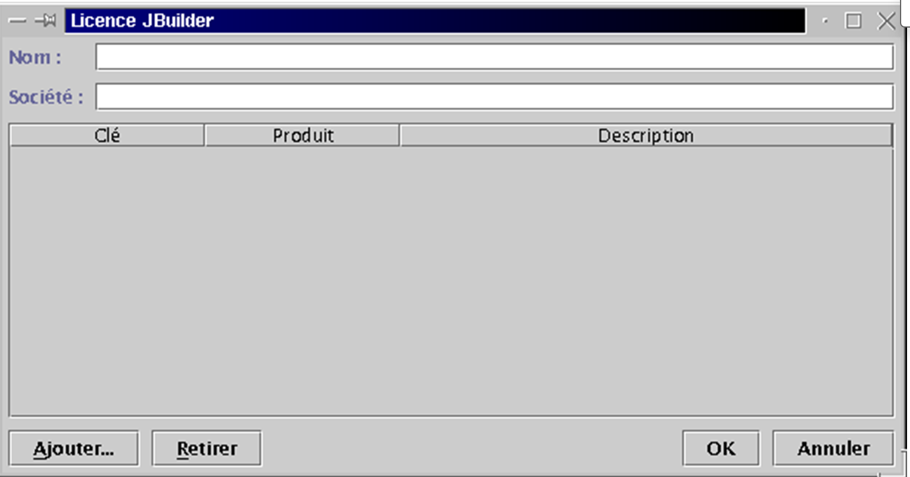
Füllen Sie die Felder „Name“ und „Firma“ aus. Klicken Sie auf [Hinzufügen], um Ihren Aktivierungsschlüssel einzugeben. Denken Sie daran, dass Ihnen dieser Schlüssel per E-Mail zugesandt worden sein sollte. Falls Sie ihn verloren haben, können Sie ihn über die URL abrufen, von der Sie JBuilder 4 heruntergeladen haben (siehe Anfang der Installation). Sobald Ihr Aktivierungsschlüssel akzeptiert wurde, werden die Lizenzbedingungen angezeigt:

Wenn Sie auf „OK“ klicken, gelangen Sie zurück zu dem zuvor angezeigten Fenster zur Eingabe von Informationen:

Klicken Sie auf „OK“, um diesen Schritt abzuschließen, der nur bei der ersten Ausführung durchgeführt wird. Anschließend wird die JBuilder-Entwicklungsumgebung angezeigt:

Beenden Sie JBuilder, um die Dokumentation jetzt zu installieren. Dadurch werden eine Reihe von Dateien installiert, die in der JBuilder-Hilfe verwendet werden, die derzeit noch unvollständig ist. Kehren Sie zu dem Verzeichnis zurück, in das Sie die JBuilder-tar.gz-Dateien entpackt haben. Das Installationsprogramm befindet sich im Verzeichnis „docs“. Navigieren Sie dorthin:
[cd docs]
[ls -l]
-rw-r--r-- 1 nobody nobody 1128 oct 10 2000 deploy.txt
-rwxr-xr-x 1 nobody nobody 40497874 oct 10 2000 doc_install.bin
drwxr-xr-x 2 nobody nobody 4096 oct 10 2000 images
-rw-r--r-- 1 nobody nobody 9210 oct 10 2000 index.html
-rw-r--r-- 1 nobody nobody 23779 oct 10 2000 license.txt
-rw-r--r-- 1 nobody nobody 75739 oct 10 2000 release_notes.html
-rw-r--r-- 1 nobody nobody 31902 oct 10 2000 whatsnew.html
Die Installationsdatei heißt doc_install.bin, aber Sie können sie nicht sofort ausführen. Wenn Sie dies tun, schlägt die Installation fehl, ohne dass Sie verstehen, warum. Lesen Sie die Datei index.html in einem Browser, um eine detaillierte Beschreibung des Installationsvorgangs zu erhalten. Das Installationsprogramm benötigt eine Java Virtual Machine (JVM); genauer gesagt ein Programm namens java, das sich im PATH Ihres Computers befinden muss. Beachten Sie, dass PATH eine Unix-Variable ist, deren Wert in der Form rep1:rep2:...:repn die Verzeichnisse repi angibt, die bei der Suche nach einer ausführbaren Datei durchsucht werden müssen. Hier fordert das Installationsprogramm die Ausführung eines Java-Programms an. Je nach der Anzahl der hier und da installierten Java Virtual Machines verfügen Sie möglicherweise über mehrere Versionen dieses Programms. Logischerweise verwenden wir die von JBuilder 4 bereitgestellte Version, die sich in /opt/jbuilder4/jdk1.3/bin befindet. So fügen Sie dieses Verzeichnis zur PATH-Variablen hinzu:
[echo $PATH]
/usr/local/sbin:/usr/sbin:/sbin:/usr/local/sbin:/usr/local/bin:/sbin:/bin:/usr/sbin:/usr/bin:/usr/X11R6/bin:/root/bin
[export PATH=/opt/jbuilder4/jdk1.3/bin/:$PATH]
[echo $PATH]
/opt/jbuilder4/jdk1.3/bin/:/usr/local/sbin:/usr/sbin:/sbin:/usr/local/sbin:/usr/local/bin:/sbin:/bin:/usr/sbin:/usr/bin:/usr/X11R6/bin:/root/bin
Wir können nun mit der Installation der Dokumentation beginnen:
Dies ist eine grafische Installation:

Sie ähnelt stark der Installation von JBuilder Foundation. Daher werden wir hier nicht näher darauf eingehen. Es gibt einen Bildschirm, den Sie auf keinen Fall übersehen dürfen:

Das Installationsprogramm sollte normalerweise den Speicherort, an dem Sie JBuilder Foundation installiert haben, selbstständig finden. Ändern Sie daher die Standardeinstellungen nicht, es sei denn, sie sind natürlich falsch.
Sobald die Dokumentation installiert ist, sind wir bereit für einen weiteren Test von JBuilder. Starten Sie die Anwendung wie oben gezeigt. Sobald JBuilder geöffnet ist, wählen Sie „Hilfe“ > „Hilfethemen“. Klicken Sie im linken Bereich auf den Link „Tutorials“:

JBuilder enthält eine Reihe von Tutorials, die Ihnen den Einstieg in die Java-Programmierung erleichtern. Im Folgenden haben wir das oben erwähnte Tutorial „Erstellen einer Anwendung“ durchlaufen.

Gehen Sie in JBuilder auf „Datei“ > „Neues Projekt“. Ein Assistent führt Sie durch drei Bildschirmmasken:

Wir erstellen ein einfaches Fenster mit dem Titel „Hallo, alle zusammen“. Wir nennen dieses Projekt „hello“. Das Beispiel wurde als Root-Benutzer ausgeführt. JBuilder bietet Ihnen nun an, alle Projekte in einem Verzeichnis „jbproject“ innerhalb des Root-Anmeldeverzeichnisses zu gruppieren. Das Projekt „hello“ wird im Verzeichnis „hello“ (Feld „Projektverzeichnisname“) innerhalb von „jbproject“ abgelegt. Klicken Sie auf [Weiter].
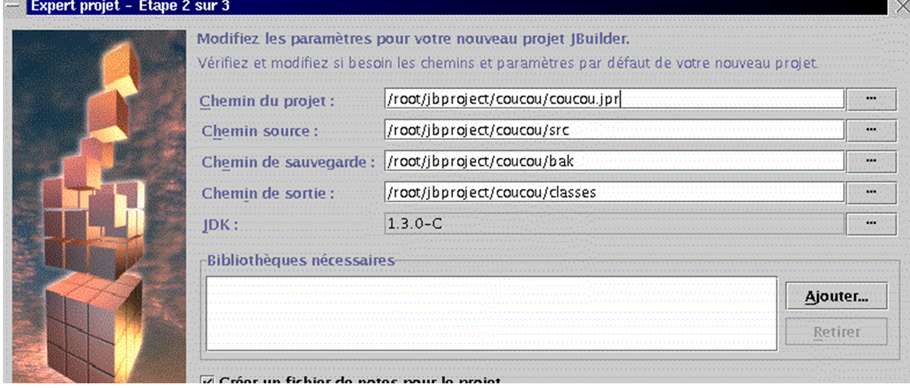
Dieser zweite Bildschirm ist eine Zusammenfassung der verschiedenen Pfade in Ihrem Projekt. Es gibt nichts zu ändern. Klicken Sie auf [Weiter].
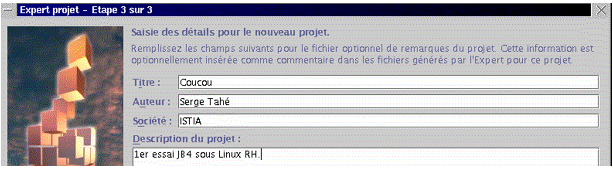
Auf dem dritten Bildschirm werden Sie aufgefordert, Ihr Projekt anzupassen. Geben Sie die Details ein und klicken Sie auf [Fertigstellen].
Gehen Sie nun zu „Datei/Neu“:

Wählen Sie „Anwendung“ und klicken Sie auf „OK“. Ein neuer Assistent zeigt zwei Bildschirme an:
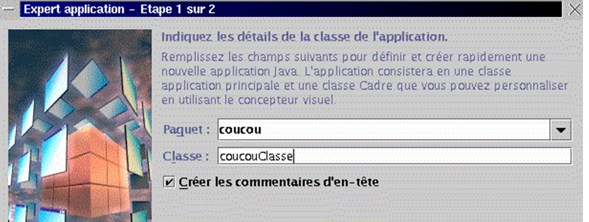
Im Feld „Paket“ wird der Projektname verwendet. Im Feld „Klasse“ werden Sie nach dem Namen für die Hauptklasse des Projekts gefragt. Verwenden Sie den oben genannten Namen und klicken Sie auf [Weiter]:

Unsere Anwendung enthält eine zweite Java-Klasse für das Anwendungsfenster. Geben Sie dieser Klasse einen Namen. Das Feld „Titel“ ist der Titel, den Sie diesem Fenster geben möchten. Der Bereich „Optionen“ bietet Optionen für Ihr Fenster. Wählen Sie alle aus und klicken Sie auf [Fertigstellen]. Sie kehren dann zur JBuilder-Umgebung zurück, die mit den von Ihnen für Ihr Projekt angegebenen Informationen aktualisiert wurde:

Im Fenster oben links (1) sehen Sie die Liste der Dateien, aus denen Ihr Projekt besteht. Dazu gehören die beiden .java-Klassen, die wir gerade benannt haben. Im rechten Fenster (2) sehen Sie den Java-Code für die Klasse „coucouCadre“. Das Fenster unten links zeigt die Struktur (Klassen, Methoden, Attribute) Ihres Projekts an. Es ist bereit zur Ausführung. Klicken Sie oben auf Schaltfläche 4, wählen Sie „Run/Run Project“ oder drücken Sie F9. Sie sollten das folgende Fenster sehen:

Wenn Sie auf die Option „Hilfe“ klicken, sollten Sie die Informationen sehen, die Sie den Erstellungsassistenten angegeben haben. Wir gehen nicht weiter darauf ein. Es ist nun an der Zeit, sich mit den Tutorials zu befassen.
Bevor wir zum Schluss kommen, wollen wir noch zeigen, dass Sie nicht nur JBuilder und dessen grafische Oberfläche nutzen können, sondern auch das JDK, das damit geliefert wurde und sich unter /opt/jbuilder4/jdk1.3 befindet. Erstellen Sie die folgende Datei essai1.java:
import java.io.*;
public class essai1{
public static void main(String args[]){
System.out.println("coucou");
System.exit(0);
}
}
Kompilieren und führen wir das Programm mit dem JBuilder JDK aus: